<!doctype html>
<html lang="en">
<head>
  <meta charset="utf-8">
  <meta name="viewport" content="width=device-width, initial-scale=1">
  <title>arxiv digest — 2026-06-16</title>
  <style>
:root {
  --bg: #ffffff;
  --fg: #1f2328;
  --muted: #59636e;
  --border: #d0d7de;
  --card: #f6f8fa;
  --link: #0969da;
}
body {
  max-width: 980px;
  margin: 0 auto;
  padding: 2rem 1rem 5rem;
  font-family: -apple-system, BlinkMacSystemFont, "Segoe UI", Helvetica, Arial, sans-serif;
  line-height: 1.55;
  color: var(--fg);
  background: var(--bg);
}
a { color: var(--link); }
img { max-width: 100%; height: auto; }
pre, code { background: var(--card); border-radius: 6px; }
pre { padding: 1rem; overflow-x: auto; }
blockquote { border-left: 4px solid var(--border); padding-left: 1rem; color: var(--muted); }
details { margin: 0.6rem 0; }
summary { cursor: pointer; font-weight: 600; }
.paper-figures-scroll {
  display: flex;
  gap: 1rem;
  overflow-x: auto;
  overscroll-behavior-x: contain;
  padding: 0.75rem 0.25rem 1rem;
  margin: 1rem 0 1.25rem;
  border-top: 1px solid var(--border);
  border-bottom: 1px solid var(--border);
  scroll-snap-type: x proximity;
}
.paper-figure-card {
  flex: 0 0 min(260px, 72vw);
  scroll-snap-align: start;
  background: var(--card);
  border: 1px solid var(--border);
  border-radius: 12px;
  padding: 0.55rem;
}
.paper-figure-card img {
  display: block;
  width: 100%;
  max-height: 240px;
  object-fit: contain;
  background: white;
  border-radius: 8px;
}
.paper-figure-caption {
  display: block;
  margin-top: 0.5rem;
  color: var(--muted);
  font-size: 0.85rem;
}
.figure-strip-hint {
  color: var(--muted);
  font-size: 0.9rem;
  margin-bottom: -0.3rem;
}
</style>
  <!-- MathJax: renders $...$ inline math and $$...$$ display math, plus
       \(...\) and \[...\]. Loaded from the official CDN; works offline
       once cached. Configured to skip code/pre blocks so arxiv IDs that
       look like dollar amounts don't get mangled. -->
  <script>
    window.MathJax = {
      tex: {
        inlineMath: [['$', '$'], ['\\(', '\\)']],
        displayMath: [['$$', '$$'], ['\\[', '\\]']],
        processEscapes: true,
        processEnvironments: true
      },
      options: {
        skipHtmlTags: ['script', 'noscript', 'style', 'textarea', 'pre', 'code'],
        ignoreHtmlClass: 'tex2jax_ignore',
        processHtmlClass: 'tex2jax_process'
      }
    };
  </script>
  <script id="MathJax-script" async
    src="https://cdn.jsdelivr.net/npm/mathjax@3/es5/tex-chtml.js"></script>
</head>
<body>
<header style="background-color: #333; color: white; padding: 15px; margin-bottom: 20px;">
  <h1 style="margin: 0; font-size: 24px;">
    <a href="https://ochelpan.github.io/arXiv_clean/" style="color: white; text-decoration: none;">Main</a>
  </h1>
</header>

<h1>Daily arXiv Report</h1>

<hr>
<p>
<a href="index.html">← Index</a>
 · <a href="papers_06.html">← Previous</a> · <a href="papers_08.html">Next →</a>
</p>
<hr>

<h2>Papers 121–140</h2>
<p><a id="paper-2606.15310"></a></p>
<h3 id="biological-proper-time-and-entropy-cost-invariance-in-cardiac-and-respiratory-lifespan-scaling"><a href="http://arxiv.org/abs/2606.15310v1">Biological proper time and entropy-cost invariance in cardiac and respiratory lifespan scaling</a></h3>
<p><strong>Authors:</strong> Mesfin Taye<br>
<strong>Type:</strong> theory · <strong>Category:</strong> statistical mechanics · <strong>PDF:</strong> <a href="https://arxiv.org/pdf/2606.15310v1">https://arxiv.org/pdf/2606.15310v1</a><br>
<strong>Analysis basis:</strong> full PDF text, analyzed in chunks
<strong>Topic relevance:</strong> <code>non-equilibrium dynamics</code> <strong>2/5</strong> · <code>non-equilibrium universality</code> <strong>2/5</strong> · <code>Keldysh / 2PI / non-Gaussian methods</code> <strong>1/5</strong> · <code>correlated / nonlocal dissipation</code> <strong>1/5</strong> · <code>driven-dissipative phase transition</code> <strong>1/5</strong> · <code>methods for driven-dissipative</code> <strong>1/5</strong></p>
<div class="figure-strip-hint">↔ Scroll figures horizontally</div>
<div class="paper-figures-scroll">
<figure class="paper-figure-card">
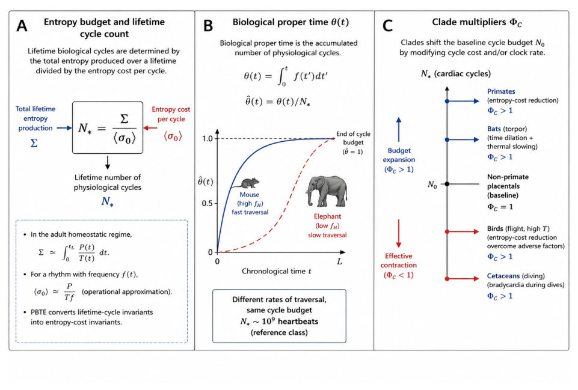
<figcaption class="paper-figure-caption"><b>Fig 1.</b> Figure 1: Schematic summary of the PBTE framework. (A) The lifetime number of physiological cycles is determined by the ratio of total lifetime entropy production Σ to the mean entropy cost per cycle ⟨σ0⟩. (B) Biological proper time θ(t) is the accumulated number of physiological cycles. Small mammals, with high cardiac frequency, traverse the reference cycle budget rapidly in chronological time, whereas large mammals traverse the same budget more slowly. (C) Clade multipliers ΦC shift the baseline cardiac budget N0 by modifying the entropy cost per cycle and/or the rate at which biological time advances. Non- primate placentals define the reference class, while primates, bats, birds, and...</figcaption>
</figure>
<figure class="paper-figure-card">
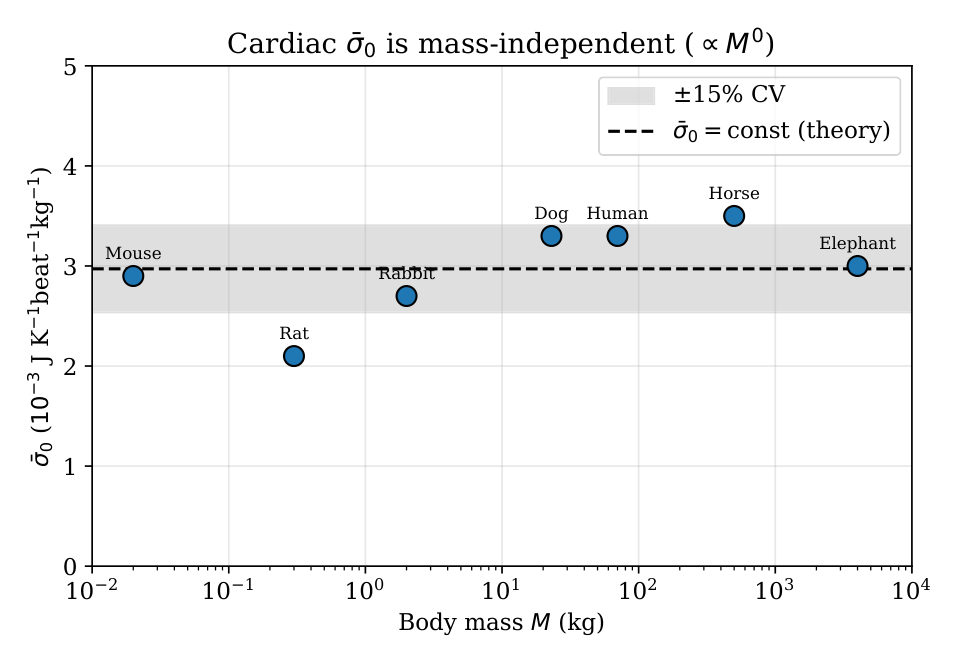
<figcaption class="paper-figure-caption"><b>Fig 2.</b> Figure 2: Mass-specific cardiac entropy cost ¯σ(M) H versus body mass. The dashed line shows the PBTE prediction ¯σ(M) H ∝M 0.</figcaption>
</figure>
<figure class="paper-figure-card">
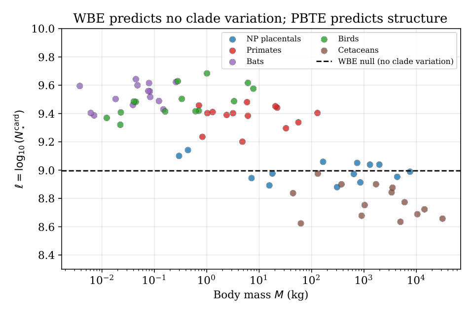
<figcaption class="paper-figure-caption"><b>Fig 3.</b> Figure 3: Lifetime cardiac cycle count ℓ= log10(N ⋆ H) versus body mass. PBTE predicts flat within-clade profiles with clade-dependent vertical offsets ∆ℓ= log10 ΦC.</figcaption>
</figure>
<figure class="paper-figure-card">
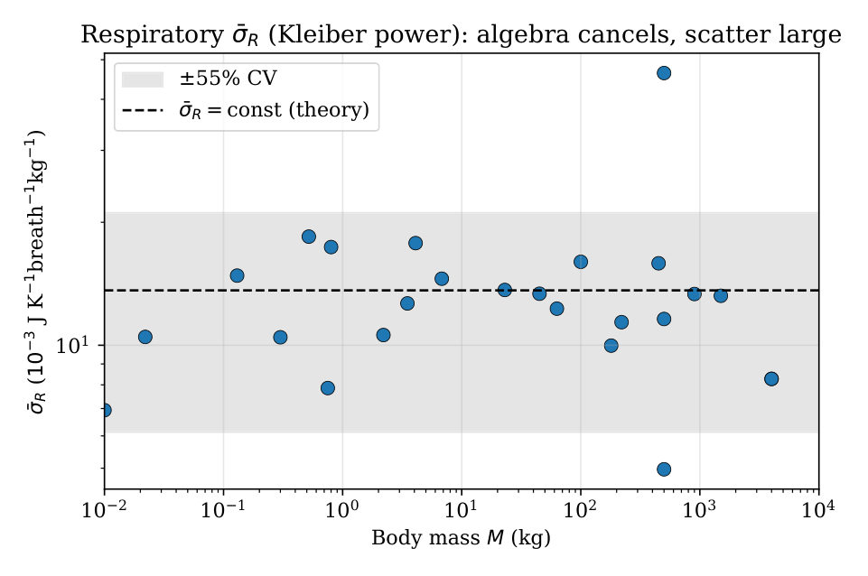
<figcaption class="paper-figure-caption"><b>Fig 4.</b> Figure 4: Mass-specific respiratory entropy cost ¯σ(M) R estimated with Kleiber metabolic power. The leading allometric exponents cancel, yielding an approximately scale-invariant respiratory entropy cost per breath per unit mass, although the scatter is larger than in the cardiac clock.</figcaption>
</figure>
<figure class="paper-figure-card">
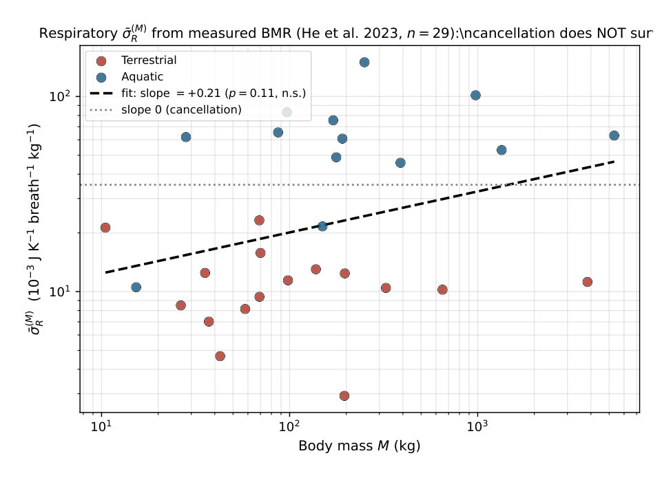
<figcaption class="paper-figure-caption"><b>Fig 5.</b> Figure 5: The non-circular test of the respiratory clock: mass cancellation does not survive measured BMR. Mass-specific respiratory entropy cost ¯σ(M) R computed from measured species-level basal metabolic rates (He et al. 2023), in which P, fR, T, and M enter as independent empirical quantities rather than through imposed Kleiber scaling. Unlike Figure 4, where flatness is partly guaranteed by construction (P ∝M 3/4), here no canonical exponent is assumed. On the n = 29 mammals with both measured BMR and measured resting breath rate, the fitted slope is +0.21 (cf. +0.005 under Kleiber power); it is not statistically resolved (p ≃0.11), and the scatter is large (coefficient of variation...</figcaption>
</figure>
</div>

<p><strong>Summary.</strong> This work develops the Principle of Biological Time Equivalence (PBTE), framing aging not by chronological time but by the consumption of a finite 'entropy budget' derived from physiological cycles. By applying open-system thermodynamics, it shows that the cardiac clock exhibits a robust, mass-independent entropy cost per beat across mammals, while the respiratory clock fails this test when measured empirically.</p>
<p><strong>Why it may be interesting.</strong> The application of entropy balance principles to biological time provides a novel physical constraint on life history evolution. The successful prediction of mass-independent energy costs across vastly different body sizes is analogous to finding universal scaling laws in complex quantum or condensed matter systems.</p>
<details>
<summary>Detailed structure</summary>
<p><strong>Main problem.</strong> To develop a thermodynamic framework (PBTE) explaining persistent temporal invariants, such as fixed lifetime cycle counts in cardiac or respiratory systems, across vast variations in body size and metabolism.</p>
<p><strong>Main result.</strong> The mass-specific entropy cost per physiological cycle ($ar{\sigma}_0$) is predicted to be invariant with body mass for the cardiac clock, providing a robust thermodynamic interpretation of allometric cancellation. However, this invariance fails when tested using measured metabolic rates for the respiratory clock.</p>
<p><strong>Method.</strong> The framework uses open-system thermodynamics ($\dot{S} = \dot{e}_p - \dot{h}_d$) to define biological proper time based on accumulated entropy production relative to an average cycle cost. This leads to a cycle-count relation $N^\star = \Sigma / \langle\sigma_0
angle$.</p>
<p><strong>Model / system.</strong> The model treats living organisms as open, non-equilibrium dissipative systems. The core concept is the Principle of Biological Time Equivalence (PBTE), which reinterprets physiological cycles as accumulating a finite 'entropy budget' ($\Sigma$).</p>
<p><strong>Key observables.</strong> Mass-specific entropy cost per cycle ($ar{\sigma}_0$), Lifetime Cycle Count ($N^\star$), and the derived biological proper time coordinate ($ ext{APBTE}$).</p>
<p><strong>Important parameters / regimes.</strong> Metabolic Power ($P$), Body Temperature ($T$), Physiological Frequency ($f$), and Body Mass ($M$). The scaling laws $P \propto M^{3/4}$ and $f \propto M^{-1/4}$ are crucial.</p>
<p><strong>Assumptions / limitations.</strong> The analysis relies on the homeostatic approximation $\dot{e}_p \simeq P/T$ and assumes that life history variations (clade differences) can be systematically parameterized by multiplicative factors ($\Phi_C$).</p>
<p><strong>Figures summary.</strong> Figures illustrate the near-perfect flatness of the mass-specific cardiac entropy cost ($ar{\sigma}_H(M)$) vs. body mass, confirming $M^0$ scaling, while also showing that respiratory cycle counts exhibit clade-dependent vertical offsets rather than continuous mass dependence.</p>
<p><strong>Paper structure.</strong> The paper builds from fundamental open-system thermodynamics to derive the PBTE relation ($N^\star = \Sigma / \langle\sigma_0
angle$). It then tests this theory by comparing the scaling invariance of cardiac vs. respiratory clocks, concluding with an interpretation of clade differences as structured thermodynamic strategies.</p>
</details>
<details>
<summary>Abstract</summary>
<p>Warm-blooded vertebrates accumulate approximately conserved numbers of physiological cycles over a natural lifetime: of order $10^9$ heartbeats and $10^8$--$3\times10^8$ breaths. These regularities are not exact constants, but their persistence across orders-of-magnitude variation in body mass, metabolic power, physiological frequency, and lifespan suggests that biological time is not measured by chronological duration alone. We develop the Principle of Biological Time Equivalence (PBTE), a thermodynamic framework in which lifetime cycle count is determined by the ratio between total lifetime entropy production and the entropy cost of one physiological cycle. Starting from the open-system entropy balance $\dot S=\dot e_p-\dot h_d$, we define the entropy cost per cycle as $σ_0=dΣ/dN$, where $dΣ$ is the entropy produced as the physiological clock advances by $dN$ cycles. For an adult homeostatic regime, this gives the cycle-count relation $N_\star=Σ/\langleσ_0\rangle$, with $Σ=\int_0^L \dot e_p(t)\,dt$, where $N_\star$ is the lifetime cycle count, $Σ$ is total lifetime entropy production, and $\langleσ_0\rangle$ is the lifetime-averaged entropy cost per cycle. In the homeostatic limit, $\dot e_p\simeq P/T$, so direct measurement of metabolic power $P$, body temperature $T$, and physiological frequency $f$ gives $σ_0\simeq P/(Tf)$. PBTE converts the empirical lifetime-cycle invariants into entropy-cost invariants. Under Kleiber metabolic scaling and quarter-power physiological-frequency scaling, the mass-specific entropy cost satisfies $\barσ_0=P/(TfM)\propto M^{3/4+1/4-1}=M^0$, providing a thermodynamic interpretation of allometric mass cancellation.</p>
</details>
<p><sub><a href="#top">↑ back to top</a></sub></p>

<p><a id="paper-2606.15557"></a></p>
<h3 id="entropic-necks-dynamic-crossovers-and-fragility-in-supercooled-liquids"><a href="http://arxiv.org/abs/2606.15557v1">Entropic Necks, Dynamic Crossovers, and Fragility in Supercooled Liquids</a></h3>
<p><strong>Authors:</strong> Biman Bagchi<br>
<strong>Type:</strong> theory · <strong>Category:</strong> statistical mechanics · <strong>PDF:</strong> <a href="https://arxiv.org/pdf/2606.15557v1">https://arxiv.org/pdf/2606.15557v1</a><br>
<strong>Analysis basis:</strong> full PDF text, analyzed in chunks
<strong>Topic relevance:</strong> <code>non-equilibrium dynamics</code> <strong>2/5</strong> · <code>Keldysh / 2PI / non-Gaussian methods</code> <strong>1/5</strong> · <code>correlated / nonlocal dissipation</code> <strong>1/5</strong> · <code>driven-dissipative phase transition</code> <strong>1/5</strong> · <code>methods for driven-dissipative</code> <strong>1/5</strong> · <code>non-equilibrium universality</code> <strong>1/5</strong> · <code>scars &amp; prethermalization</code> <strong>1/5</strong></p>
<div class="figure-strip-hint">↔ Scroll figures horizontally</div>
<div class="paper-figures-scroll">
<figure class="paper-figure-card">
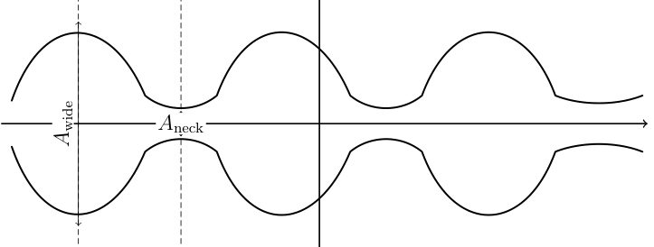
<figcaption class="paper-figure-caption"><b>Fig 1.</b> Figure 1: Schematic representation of Zwanzig’s entropic bottleneck picture in configura- tion space. The coordinate X denotes progress between neighboring metastable basins, while Q denotes a schematic transverse neck coordinate that represents the instantaneous openness or configurational accessibility of the bottleneck. Wide regions correspond to basins and narrow but finite regions correspond to entropic necks. The local width A(X) measures the effective number of accessible configurations at a given X and defines an entropic potential F(X) = −kBT ln A(X). Thus constricted regions act as entropic bar- riers that reduce the probability of interbasin passage.</figcaption>
</figure>
</div>

<p><strong>Summary.</strong> This work develops a unified theoretical framework by merging the entropic-neck picture with the Mori-Zwanzig formalism to explain glassy slowing down. It demonstrates that structural relaxation is governed by the entropy loss associated with passing through narrow configurational bottlenecks. This mechanism naturally explains the crossover from high-temperature local dynamics (Rosenfeld scaling) to low-temperature activated behavior (Adam-Gibbs relation).</p>
<p><strong>Why it may be interesting.</strong> The rigorous application of projection operator techniques (Mori-Zwanzig) to derive non-Markovian memory kernels from geometric constraints (the bottleneck) provides a powerful template for understanding slow dynamics in complex many-body systems, applicable beyond simple liquids.</p>
<details>
<summary>Detailed structure</summary>
<p><strong>Main problem.</strong> The work addresses the origin of the dramatic dynamical slowdown observed in supercooled liquids, specifically explaining the crossover between high-temperature local dynamics and low-temperature activated structural relaxation.</p>
<p><strong>Main result.</strong> A unified theoretical framework is developed showing that structural relaxation is controlled by the narrowing of configurational pathways (entropic bottlenecks), naturally unifying Rosenfeld excess-entropy scaling with the Adam-Gibbs relation.</p>
<p><strong>Method.</strong> The authors combine Zwanzig's entropic-neck picture with the Mori-Zwanzig memory-function formalism to derive an effective generalized Langevin equation for slow variables.</p>
<p><strong>Model / system.</strong> The system is supercooled liquids whose dynamics are mapped onto a configuration space featuring metastable basins separated by narrow, entropy-controlling 'necks.' The model uses coupled slow variables: progress (interbasin motion) and neck openness.</p>
<p><strong>Key observables.</strong> Relaxation times ($    au(T)$), configurational entropy ($S_{conf}$), excess entropy ($S_{ex}$), and the effective memory kernel components.</p>
<p><strong>Important parameters / regimes.</strong> Temperature ($T$), Configurational Entropy ($s_c(T)$), Neck Deficit ($\Delta\Sigma_{	ext{neck}}$), and the crossover temperature $T_{cross}$.</p>
<p><strong>Assumptions / limitations.</strong> The theory assumes that structural relaxation can be decomposed into dynamics governed by local structure (high T) and rare, cooperative passage through narrow entropic bottlenecks (low T). The derivation relies on linearizing the free-energy surface near these bottlenecks.</p>
<p><strong>Figures summary.</strong> Figures schematically illustrate the entropic bottleneck picture, showing progress ($X$) between basins connected by a variable cross-section neck ($Q$), which dictates the effective potential and memory kernel.</p>
<p><strong>Paper structure.</strong> The paper builds from establishing the physical problem (slowdown) to introducing the theoretical tools (Mori-Zwanzig/Entropic Neck). It then derives the dynamics, showing how eliminating the fast neck coordinate generates a long-lived, entropy-controlled memory kernel that dictates the crossover between RS and AG regimes.</p>
</details>
<details>
<summary>Abstract</summary>
<p>The dramatic slowdown of dynamics in supercooled liquids is accompanied by a sequence of dynamical crossovers, most notably the transition from high-temperature collision-dominated transport to low-temperature activated structural relaxation. A particularly striking manifestation of this change is the crossover from Rosenfeld excess-entropy scaling to the Adam--Gibbs relation. In this work we develop a theoretical framework based on a configuration-space extension of Zwanzig's entropic-neck picture and combine it with a Mori--Zwanzig memory-function formalism to address anomalies of supercooled liquids. The central idea is that structural relaxation is controlled by the narrowing of configurational pathways connecting metastable basins of the inherent-structure landscape. Starting from coupled slow variables describing intrabasin motion and neck fluctuations, we derive a reduced generalized Langevin description in which elimination of the neck coordinate generates a long-lived memory kernel and naturally leads to entropy-controlled activated dynamics. At high temperatures the neck is broad and readily accessible, yielding Rosenfeld-type transport governed primarily by local structural entropy. Upon cooling, progressive neck constriction produces an increasing entropy deficit, leading to Adam--Gibbs behavior and activated relaxation. Within this picture, fragility acquires a simple geometric interpretation: fragile liquids are characterized by a rapid collapse of the effective configurational neck with decreasing temperature, whereas strong liquids exhibit a much slower evolution of accessible pathways. The framework does not by itself compute the configurational entropy, mismatch penalty, or cooperative length from microscopic interactions; its aim is to provide a dynamical and geometrical interpretation.</p>
</details>
<p><sub><a href="#top">↑ back to top</a></sub></p>

<p><a id="paper-2606.16514"></a></p>
<h3 id="fully-quantum-algorithm-for-the-1-dimensional-linear-lattice-boltzmann-method"><a href="http://arxiv.org/abs/2606.16514v1">Fully Quantum Algorithm for the 1-dimensional linear Lattice Boltzmann Method</a></h3>
<p><strong>Authors:</strong> Mohammed Bediche, Matthijs van Waveren, Denis Ricot, Pierre Sagaut<br>
<strong>Type:</strong> both · <strong>Category:</strong> quantum information and computing · <strong>PDF:</strong> <a href="https://arxiv.org/pdf/2606.16514v1">https://arxiv.org/pdf/2606.16514v1</a><br>
<strong>Analysis basis:</strong> full PDF text, analyzed in chunks
<strong>Topic relevance:</strong> <code>QC/QI experiment</code> <strong>2/5</strong> · <code>measurement-induced transitions</code> <strong>2/5</strong> · <code>quantum measurements</code> <strong>2/5</strong> · <code>methods for driven-dissipative</code> <strong>1/5</strong> · <code>non-equilibrium dynamics</code> <strong>1/5</strong></p>
<div class="figure-strip-hint">↔ Scroll figures horizontally</div>
<div class="paper-figures-scroll">
<figure class="paper-figure-card">
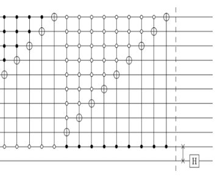
<figcaption class="paper-figure-caption"><b>Fig 1.</b> Fig. 1. The quantum circuit for one timestep. The leftmost section is the encoding step. The section with C1 and C2 is the collision step. The section to the right of it is the propagation step. The final rightmost section is the macro-states calculation step.</figcaption>
</figure>
<figure class="paper-figure-card">
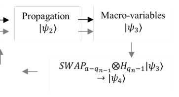
<figcaption class="paper-figure-caption"><b>Fig 2.</b> Fig. 2. The architecture of the quantum algorithm. The black arrows represent the first run of the algorithm and the grey ones the additional post treatment and the processes repeated in the m time loops afterwards for a total time of t=mΔt.</figcaption>
</figure>
<figure class="paper-figure-card">
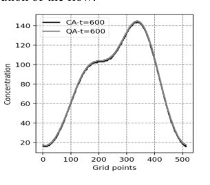
<figcaption class="paper-figure-caption"><b>Fig 3.</b> Fig. 3. Results of the fully quantum algorithm on a quantum simulator. CA corresponds to the Classical Algorithm, and QA to the Quantum Algorithm.</figcaption>
</figure>
<figure class="paper-figure-card">
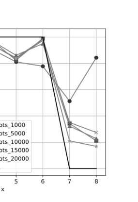
<figcaption class="paper-figure-caption"><b>Fig 4.</b> Fig.4 represents the result obtained from ibm_torino, and it shows that we were successful in obtaining the same evolution of the flow as the results on the classical algorithm. We also note that increasing the number of shots from 1000 to 20000 led to</figcaption>
</figure>
<figure class="paper-figure-card">

<figcaption class="paper-figure-caption"><b>Fig 5.</b> Fig. 4. Concentration results obtained from ibm_torino. The hor- izontal axis has the meshpoints.</figcaption>
</figure>
</div>

<p><strong>Summary.</strong> The paper presents a novel, fully quantum algorithm for simulating the 1D advection-diffusion equation using the Lattice Boltzmann Method. It improves upon prior hybrid methods by eliminating time-step measurements, allowing for more efficient quantum evolution. The work validates the approach via simulation and tests its feasibility on current noisy quantum hardware.</p>
<p><strong>Why it may be interesting.</strong> This work directly applies advanced quantum computation techniques (quantum walks, unitary evolution) to solve a fundamental problem in fluid dynamics, bridging theoretical quantum algorithms with practical condensed matter/fluid physics modeling.</p>
<details>
<summary>Detailed structure</summary>
<p><strong>Main problem.</strong> The primary goal is to develop a fully quantum algorithm capable of solving the one-dimensional linear advection-diffusion equation using the Lattice Boltzmann Method (LBM). This aims to surpass the limitations of existing hybrid quantum-classical approaches.</p>
<p><strong>Main result.</strong> The proposed fully quantum algorithm was successfully simulated on a quantum simulator, matching classical results. While testing on physical hardware showed expected decoherence noise fluctuations, it demonstrated the potential for a measurement-free time evolution step.</p>
<p><strong>Method.</strong> The work compares a hybrid quantum-classical scheme with an improved, fully quantum approach that minimizes measurements by encoding state information across time steps to calculate subsequent equilibrium distributions directly within the quantum circuit.</p>
<p><strong>Model / system.</strong> The simulation targets the 1D linear advection-diffusion equation solved via the LBM. The computational platform involves quantum circuits implemented on simulators and tested on a 133-qubit quantum processor.</p>
<p><strong>Key observables.</strong> Particle density (rho) and fluid velocity (u), extracted from the final state vector $|\psi
angle$.</p>
<p><strong>Important parameters / regimes.</strong> The system size is defined by the number of lattice points ($N$), and time evolution involves discrete steps ($\Delta t$). The hardware test utilized a 133-qubit machine.</p>
<p><strong>Assumptions / limitations.</strong> The key assumption for improvement is that information can be retained quantum mechanically across time steps, bypassing the classical measurement bottleneck inherent in hybrid methods. Decoherence noise limits current hardware performance.</p>
<p><strong>Figures summary.</strong> Figures compare the fully quantum algorithm's output against classical results on a simulator and show qualitative evolution matching classical expectations when run on physical quantum hardware (ibm_torino).</p>
<p><strong>Paper structure.</strong> The paper first reviews the state-of-the-art in quantum algorithms for PDEs, then details the existing hybrid LBM approach. The core contribution is presenting and analyzing the fully quantum algorithm, followed by simulation results and hardware testing.</p>
</details>
<details>
<summary>Abstract</summary>
<p>A fully quantum algorithm for solving the one-dimensional linear advection-diffusion equation using the Lattice Boltzmann method as a numerical procedure is presented in this work. We start by presenting a state of the art of the current usage of quantum algorithms for solving ordinary and partial differential equations. We then describe two algorithms for the one-dimensional Lattice Boltzmann method with two degrees of freedom. The first one is an existing hybrid quantum-classical algorithm with measurements at each time step, and the second one is our improved version, viz. a fully quantum algorithm where only one measurement is needed at the end of the algorithm. The fully quantum algorithm is first executed on a quantum simulator and then compared with a classical approach. Subsequently, the fully quantum algorithm is run on a quantum system with 133 qubits to investigate the effect of noise and the depth of the circuit on the output state. We find fluctuations in the final result due to the decoherence noise of the qubits.</p>
</details>
<p><sub><a href="#top">↑ back to top</a></sub></p>

<p><a id="paper-2606.15580"></a></p>
<h3 id="end-functionalized-ions-promote-stability-of-highly-frustrated-phases-in-diblock-copolymers"><a href="http://arxiv.org/abs/2606.15580v1">End-Functionalized Ions Promote Stability of Highly Frustrated Phases in Diblock Copolymers</a></h3>
<p><strong>Authors:</strong> Chao Duan, Zhen-Gang Wang<br>
<strong>Type:</strong> theory · <strong>Category:</strong> statistical mechanics · <strong>PDF:</strong> <a href="https://arxiv.org/pdf/2606.15580v1">https://arxiv.org/pdf/2606.15580v1</a><br>
<strong>Analysis basis:</strong> full PDF text, analyzed in chunks
<strong>Topic relevance:</strong> <code>analog quantum simulation</code> <strong>2/5</strong> · <code>driven-dissipative phase transition</code> <strong>2/5</strong> · <code>Frenkel-Kontorova</code> <strong>1/5</strong> · <code>Keldysh / 2PI / non-Gaussian methods</code> <strong>1/5</strong> · <code>methods for driven-dissipative</code> <strong>1/5</strong></p>
<div class="figure-strip-hint">↔ Scroll figures horizontally</div>
<div class="paper-figures-scroll">
<figure class="paper-figure-card">
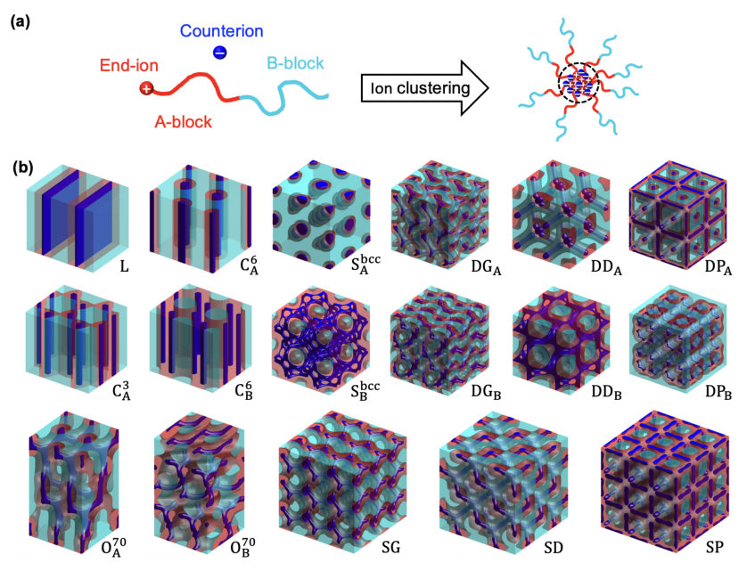
<figcaption class="paper-figure-caption"><b>Fig 1.</b> Figure 1. (a) Schematic of ion clusters and spontaneous curvature formed in the end-functionalized AB diblock copolymers. (b) Isosurface plots of corresponding polymer density and ion concentration in the candidate ordered morphologies considered in this work, including lamellae (L), hexagonal cylinders (C6 A and C6 B/C3 A), body-centered cubic spheres (Sbcc A and Sbcc B ), double- gyroid networks (DGA and DGB), double-diamond networks (DDA and DDB), double-primitive-cubic networks (DPA and DPB), orthorhombic Fddd networks (O70 A and O70 B ), as well as single-networks of gyroid, diamond and primitive-cubic (SG, SD, and SP).</figcaption>
</figure>
<figure class="paper-figure-card">
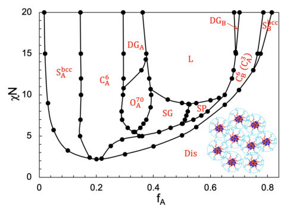
<figcaption class="paper-figure-caption"><b>Fig 2.</b> Figure 3. Phase diagram in the fA-χN plane. a = 0.3nm. Symbols denote calculated results, and lines are guides to the eye. Inset shows a schematic illustration of the disordered state, which is a liquid-like collection of ionic clusters in the form of star-like micelles.</figcaption>
</figure>
<figure class="paper-figure-card">
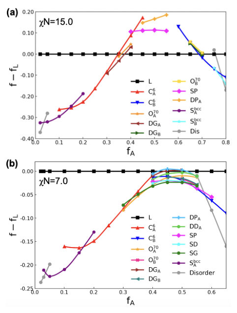
<figcaption class="paper-figure-caption"><b>Fig 3.</b> Figure 2. Free energy per chain f as a function of the volume fraction of A-block fA, relative to that of the L phase: (a) χN = 15.0, and (b) χN = 7.0. a = 0.3nm.</figcaption>
</figure>
<figure class="paper-figure-card">
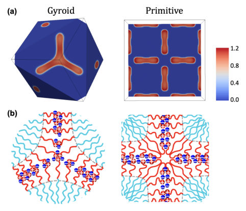
<figcaption class="paper-figure-caption"><b>Fig 4.</b> Figure 4. (a) 2D ion density profiles and (b) chain arrange- ments at the cross-sections through the node of networks for gyroid and primitive morphologies.</figcaption>
</figure>
<figure class="paper-figure-card">
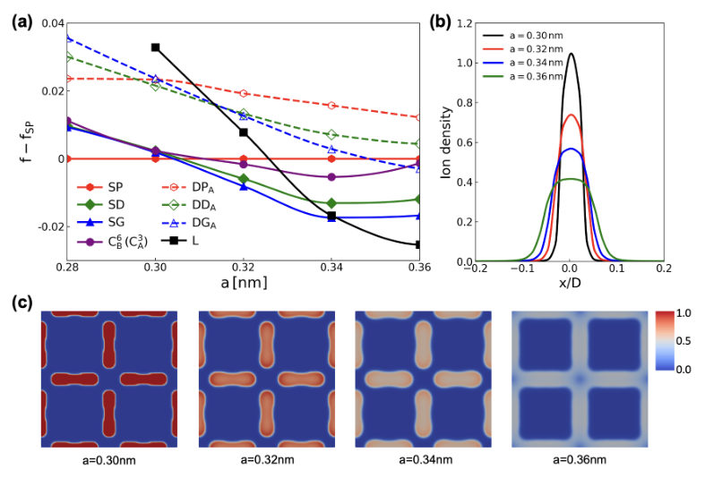
<figcaption class="paper-figure-caption"><b>Fig 5.</b> Figure 5. Effects of ion size on the relative stability of structures and ion density profiles. (a) Free energy per chain f as a function of the ion radius a, relative to that of the SP phase fSP. (b) Ion density distribution along the normal direction of the L phase with the period length D. (c) 2D ion density profiles of the SP phase for various ion radii a. χN = 7.0, fA = 0.53.</figcaption>
</figure>
</div>

<p><strong>Summary.</strong> This theoretical study demonstrates that incorporating ions only at the termini of one block in diblock copolymers can stabilize highly frustrated network phases. The stabilization arises because the resulting ion clustering generates a favorable electrostatic correlation energy that compensates for the inherent geometric packing frustration. This establishes curvature-selective end-group association as a general design principle for accessing complex polymer topologies.</p>
<p><strong>Why it may be interesting.</strong> While focused on polymer physics, the mechanism—where local electrostatic interactions (ion correlation energy) overcome entropic/packing penalties to stabilize a specific geometry—is analogous to understanding complex ordering driven by localized quantum or strong Coulombic forces in other many-body systems.</p>
<details>
<summary>Detailed structure</summary>
<p><strong>Main problem.</strong> The study aims to identify physical mechanisms that can stabilize topologically complex, highly frustrated phases (like the primitive cubic $ ext{Im}ar{3}   ext{m}$ network) in diblock copolymers, which are otherwise unstable due to severe packing penalties.</p>
<p><strong>Main result.</strong> End-functionalized ions introduce a stabilizing electrostatic energy gain by promoting local ion clustering into curved geometries, allowing these frustrated phases to become thermodynamically stable below the neutral system's order-disorder transition.</p>
<p><strong>Method.</strong> The research employs an advanced 'ion-correlation augmented self-consistent field theory,' which allows for the explicit calculation of nonperturbative electrostatic correlation energy contributions.</p>
<p><strong>Model / system.</strong> The model uses AB diblock copolymer melts where one block is end-functionalized with localized charges (ions). The system's phase behavior is mapped by comparing the free energies of various ordered morphologies.</p>
<p><strong>Key observables.</strong> Free energy decomposition, particularly the electrostatic correlation energy ($\Delta f_{e,corr}$), and the relative stability of candidate phases (L, $  ext{Im}ar{3}   ext{m}$, etc.).</p>
<p><strong>Important parameters / regimes.</strong> Strong ion-correlation regime ($\Gamma \approx 25$), ion size ($a$), and segregation strength ($\chi N$).</p>
<p><strong>Assumptions / limitations.</strong> The theory assumes a uniform dielectric constant, neglecting dielectric contrast between blocks, and initially neglects excluded volume interactions among ions.</p>
<p><strong>Figures summary.</strong> Figures illustrate schematics of ion clusters and spontaneous curvature in the copolymers, alongside free energy comparisons for various candidate morphologies (L, $  ext{Im}ar{3}   ext{m}$, etc.).</p>
<p><strong>Paper structure.</strong> The paper establishes the problem by noting the instability of frustrated phases; it then introduces end-functionalization as a solution. The core is the theoretical derivation showing how ion correlations stabilize these structures, culminating in the general principle that curvature-selective association dictates phase stability.</p>
</details>
<details>
<summary>Abstract</summary>
<p>Block copolymers self-assemble into ordered nanostructures whose geometry is governed by a competition between interfacial energy and chain conformational entropy. While this competition produces a rich sequence of morphologies, topologically complex ``frustrated'' phases such as the primitive cubic ($Im\bar{3}m$) network incur severe packing penalties and are difficult to access in neutral systems. Here we show that ions functionalized at the termini of one block in an AB diblock copolymer melt introduce a qualitatively new stabilization mechanism. Strong ion correlations drive chain-end association and generate a curvature preference toward the charged domain; the resulting tendency of end-localized ion clusters to adopt compact, curved geometries selectively favors the highly frustrated $Im\bar{3}m$ single-network over the classical phases, in a region of parameter space lying below the order-disorder transition of the neutral system. Free energy decomposition reveals that the electrostatic energy, arising almost entirely from beyond-mean-field ion correlations, becomes increasingly negative with increasing interfacial curvature. In the primitive cubic network, pronounced local segregation of ions into the cylindrical struts generates compact curved clusters whose correlation energy gain more than offsets the enhanced packing frustration, so the very geometry that is the source of packing frustration in neutral systems becomes the source of its stability here. Increasing ion size weakens correlations and suppresses the $Im\bar{3}m$ phase, consistent with experimental observations. Our results establish curvature-selective end-group association as a general principle for accessing frustrated topologies in block copolymer systems.</p>
</details>
<p><sub><a href="#top">↑ back to top</a></sub></p>

<p><a id="paper-2606.16245"></a></p>
<h3 id="orbital-selective-band-evolution-and-out-of-plane-correlation-in-the-fege-family-kagome-antiferromagnet-scfemath1364mathgemath1365math"><a href="http://arxiv.org/abs/2606.16245v1">Orbital-selective band evolution and out-of-plane correlation in the FeGe-family kagome antiferromagnet ScFe$_6$Ge$_6$</a></h3>
<p><strong>Authors:</strong> Jae Hyuck Lee, Ze Yan, Tongrui Li, Yichen Yang, Dirk Wulferding, Jongkeun Jung, Zhicheng Jiang, Mao Ye, Zhengtai Liu, Changyoung Kim, Soohyun Cho, Yanfeng Guo, Dawei Shen<br>
<strong>Type:</strong> both · <strong>Category:</strong> strongly correlated electrons · <strong>PDF:</strong> <a href="https://arxiv.org/pdf/2606.16245v1">https://arxiv.org/pdf/2606.16245v1</a><br>
<strong>Analysis basis:</strong> full PDF text, analyzed in chunks
<strong>Topic relevance:</strong> <code>spintronics-quantum-optics interface</code> <strong>2/5</strong> · <code>Keldysh / 2PI / non-Gaussian methods</code> <strong>1/5</strong> · <code>Kondo &amp; dissipative impurity</code> <strong>1/5</strong> · <code>analog quantum simulation</code> <strong>1/5</strong> · <code>driven-dissipative phase transition</code> <strong>1/5</strong></p>
<div class="figure-strip-hint">↔ Scroll figures horizontally</div>
<div class="paper-figures-scroll">
<figure class="paper-figure-card">
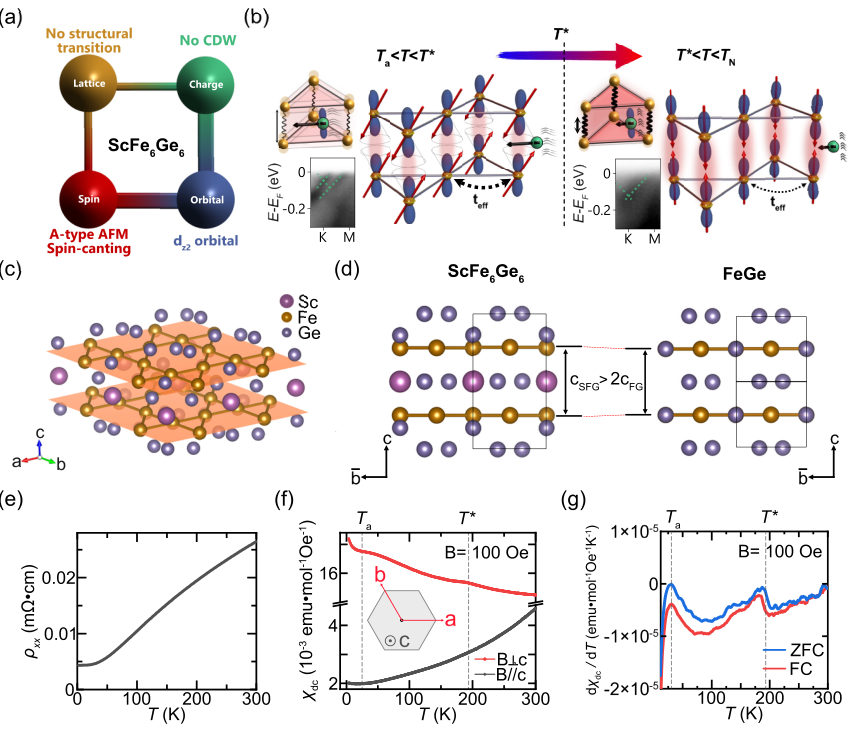
<figcaption class="paper-figure-caption"><b>Fig 1.</b> FIG. 1. Basic characterization of ScFe6Ge6. (a) Summary of the ground state of ScFe6Ge6 for each degrees of freedom. (b) Schematic depiction of the interaction between out-of-plane lattice vibrations, magnetic texture, and out-of-plane orbital electronic states in ScFe6Ge6. The magnetic order is represented by the red arrows and the induced band structure evolution is given by the green dotted lines. (c) Lattice structure of the ScFe6Ge6, where the orange planes highlight the kagome layers. (d) Side view of ScFe6Ge6 and FeGe. The rectangular black line marks the unit cell of each compound. The distances between the Fe kagome planes are compared between ScFe6Ge6 and FeGe. (e) Temperature...</figcaption>
</figure>
<figure class="paper-figure-card">
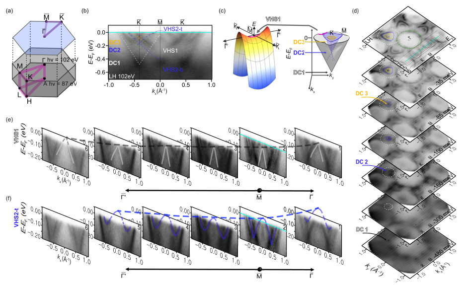
<figcaption class="paper-figure-caption"><b>Fig 2.</b> FIG. 2. Electronic band structure of ScFe6Ge6 at 9K. (a) 3D and projected 2D Brillouin zone (BZ) with each photon energy corresponding to a high-symmetry point. All ARPES data in this paper were taken with a photon energy of 102 eV. (b) Spectral image measured along the ¯K −¯ M −¯K direction under LH polarization. The white, blue, and orange dotted lines are guides to the eye for the three sets of kagome Dirac bands near EF , while the green dotted line is the hole band (HB) centered at the ¯Γ. Each of the Dirac crossings and Van Hove Singularities (VHSs) is marked accordingly. (c) Schematic diagram of the VHSs and Dirac cones of the kagome band structure in ScFe6Ge6. (d) Constant energy...</figcaption>
</figure>
<figure class="paper-figure-card">
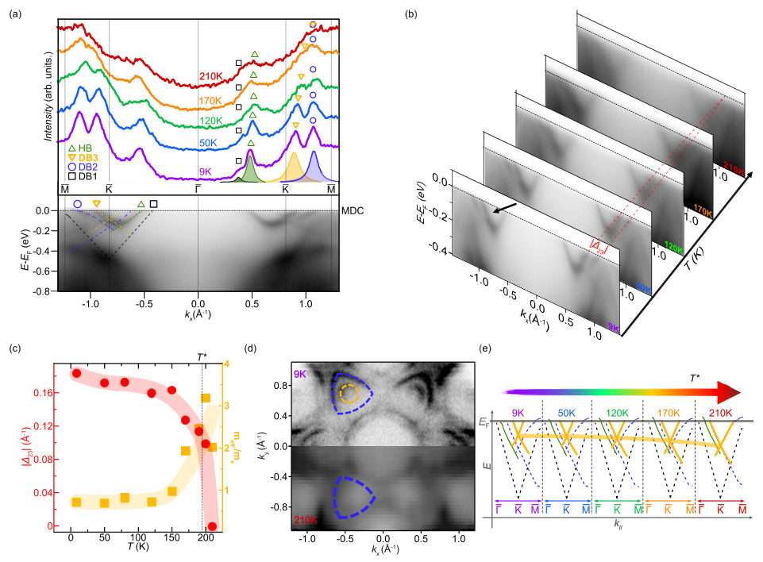
<figcaption class="paper-figure-caption"><b>Fig 3.</b> FIG. 3. Temperature dependent ARPES data. (a) The upper panel displays the temperature evolution of the momentum distribution curve (MDC) line profile taken at EF and the bottom panel is the spectral image of ¯ M −¯K −¯Γ −¯K −¯ M cut at 9 K with LH polarization for a photon energy of 102 eV. The green triangle, yellow inverse triangle, blue circle, and black square symbols each mark the peak positions of the HB, and the Dirac band (DB)s 3, 2, and 1, respectively. (b) ¯ M −¯K −¯Γ −¯K −¯ M cuts stacked along with respect to temperature. The red dotted lines are guides to the closing of band splitting (∆23) as the temperature rises. The black arrow highlights the dispersion discontinuity. (c)...</figcaption>
</figure>
<figure class="paper-figure-card">
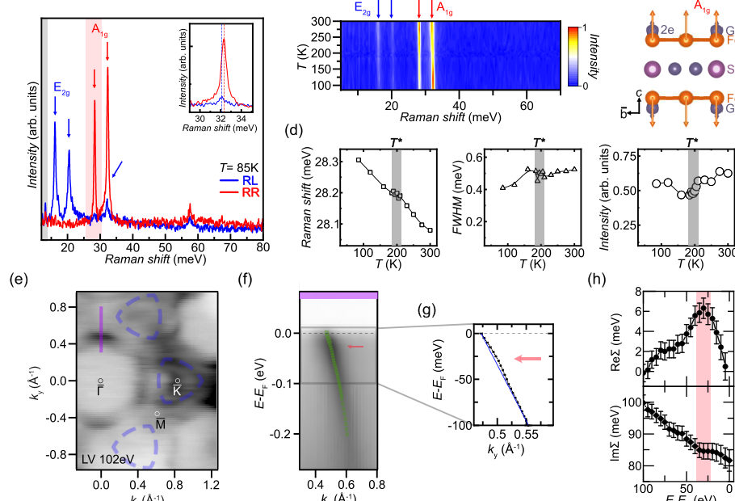
<figcaption class="paper-figure-caption"><b>Fig 4.</b> FIG. 4. Raman data of ScFe6Ge6 and the corresponding kink of the HB in ARPES result. (a) Raman spectra in the RL and RR polarization at 85 K. The inset zooms into 32 meV to highlight the energy difference between the A1g and E2g phonon modes. (b) Color contour plot of the temperature dependence in unpolarized symmetry. The blue and red arrows in (a) and (b) mark the E2g and A1g phonons, respectively. (c) Vibrational mode of the A1g phonon mode at 28 meV (A-mode). (d) Temperature dependence of the energy, FWHM, and intensity of the A-mode. (e) Fermi surface of ScFe6Ge6 at 20 K measured in the LV geometry. The blue broken triangles mark the DB2 band. (f) The ARPES intensity plot corresponding...</figcaption>
</figure>
</div>

<p><strong>Summary.</strong> This work investigates the complex interplay between magnetism, orbital physics, and lattice vibrations in kagome antiferromagnets like $  ext{ScFe}_6 ext{Ge}_6$. By comparing it to a CDW-hosting analogue ($   ext{FeGe}$), the researchers show that while charge order is absent in $    ext{ScFe}_6 ext{Ge}_6$, its magnetic transition ($T^*$) is marked by orbital-selective band shifts and magnetoelastic coupling. This highlights that out-of-plane correlations and orbital degrees of freedom are crucial drivers in these correlated materials.</p>
<p><strong>Why it may be interesting.</strong> The detailed investigation into how subtle changes in spin order (magnetoelastic coupling) can manifest as measurable electronic band shifts or phonon anomalies provides a rich platform for studying coupled quantum orders, relevant to understanding emergent phenomena in strongly correlated systems.</p>
<details>
<summary>Detailed structure</summary>
<p><strong>Main problem.</strong> The research aims to understand the general conditions governing spin-correlated Charge Density Wave (CDW) order in kagome antiferromagnets, contrasting systems that exhibit CDW with those that do not.</p>
<p><strong>Main result.</strong> In $   ext{ScFe}_6 ext{Ge}_6$, a magnetic transition at $T^*=195 	ext{ K}$ is linked to orbital-selective band shifts and magnetoelastic coupling involving out-of-plane phonon modes, suggesting orbital physics plays a key role where CDW order is absent.</p>
<p><strong>Method.</strong> The study combines multiple experimental techniques including Angle-Resolved Photoemission Spectroscopy (ARPES), Raman spectroscopy, and magnetic/resistivity measurements, supplemented by theoretical calculations.</p>
<p><strong>Model / system.</strong> The physical system is the FeGe-family of kagome antiferromagnets, specifically comparing $ ext{FeGe}$ (CDW exhibiting) with $  ext{ScFe}_6 ext{Ge}_6$ (lacking CDW). The focus is on the interplay between spin, orbital, lattice, and charge degrees of freedom.</p>
<p><strong>Key observables.</strong> Orbital-selective band shifts ($   ext{ARPES}$), anomalous kinks in phonon frequencies ($  ext{Raman}$), magnetic susceptibility ($\chi(T)$), and resistivity ($
ho(T)$).</p>
<p><strong>Important parameters / regimes.</strong> $T^* = 195 	ext{ K}$ (magnetic transition temperature); $\lambda \approx 0.3$ (electron-phonon coupling constant).</p>
<p><strong>Assumptions / limitations.</strong> The analysis relies on assigning specific orbital characters ($  ext{dz}^2$) to the observed electronic bands based on polarization dependence and analogy with known materials.</p>
<p><strong>Figures summary.</strong> Figures illustrate structural details, magnetic susceptibility curves, $   ext{ARPES}$ spectra showing Dirac cones and band shifts across $T^*$, and Raman spectra revealing an anomalous kink in the out-of-plane phonon mode near $T^*$.</p>
<p><strong>Paper structure.</strong> The paper systematically compares $    ext{ScFe}_6 ext{Ge}_6$ to $ ext{FeGe}$, using structural, magnetic, electronic ($   ext{ARPES}$), and vibrational ($  ext{Raman}$) measurements to pinpoint the mechanism driving anomalies at $T^*$, ultimately arguing for the enhanced role of orbital-selective physics.</p>
</details>
<details>
<summary>Abstract</summary>
<p>In strongly correlated materials such as high-temperature superconductors, the relation between charge density wave (CDW) order and magnetism remains an important unresolved problem. FeGe is the first kagome metal known to exhibit CDW order deep within an antiferromagnetic state, accompanied by an unconventional evolution of lattice symmetry. To elucidate the general conditions governing such spin-correlated CDW order, we investigate ScFe$_6$Ge$_6$, which lacks CDW order and therefore exhibits reduced involvement of charge degrees of freedom while retaining other properties of FeGe. Instead of a CDW order, ScFe$_6$Ge$_6$ undergoes a magnetic transition at $T^*$ = 195 K. Across this transition, angle-resolved photoemission and Raman spectroscopy reveal orbital-selective behavior confined to a single kagome Dirac band, together with electron-phonon and magnetoelastic coupling to an out-of-plane phonon mode. These results suggest that orbital-selective physics and out-of-plane correlations play enhanced roles in realizing spin-correlated CDW order in magnetic kagome metals.</p>
</details>
<p><sub><a href="#top">↑ back to top</a></sub></p>

<p><a id="paper-2606.15421"></a></p>
<h3 id="scheme-for-transport-based-global-entanglement-distribution-using-quantum-processors"><a href="http://arxiv.org/abs/2606.15421v1">Scheme for Transport-based Global Entanglement Distribution using Quantum Processors</a></h3>
<p><strong>Authors:</strong> Erik Lundblad, Mira Abu Yahia, Antonius Johannes Renders, Andreas Walther, Adam Kinos, Lars Rippe<br>
<strong>Type:</strong> theory · <strong>Category:</strong> quantum information and computing · <strong>PDF:</strong> <a href="https://arxiv.org/pdf/2606.15421v1">https://arxiv.org/pdf/2606.15421v1</a><br>
<strong>Analysis basis:</strong> full PDF text, analyzed in chunks
<strong>Topic relevance:</strong> <code>entanglement &amp; information structure</code> <strong>2/5</strong> · <code>QC/QI experiment</code> <strong>1/5</strong> · <code>methods for driven-dissipative</code> <strong>1/5</strong> · <code>non-equilibrium dynamics</code> <strong>1/5</strong> · <code>quantum optics experiment</code> <strong>1/5</strong></p>
<div class="figure-strip-hint">↔ Scroll figures horizontally</div>
<div class="paper-figures-scroll">
<figure class="paper-figure-card">
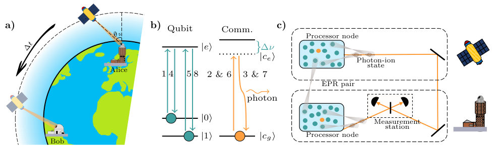
<figcaption class="paper-figure-caption"><b>Fig 1.</b> Figure 1: a) A satellite passes by ground station Alice, creating the zenith angle θz with regards to the ground station. During the overpass, a link of entangled EPR pairs is established. The satellite then travels a distance along its’ orbital path and arrives at Bob, where it alternates between generating EPR pairs with Bob and performing entanglement swapping until all EPR pairs from Alice have been converted to EPR pairs between the two ground stations. b) A qubit is initialised in the 1 √</figcaption>
</figure>
<figure class="paper-figure-card">
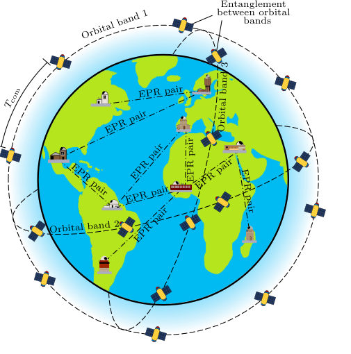
<figcaption class="paper-figure-caption"><b>Fig 2.</b> Figure 2: Constellation of satellites allowing for global coverage without additional losses.</figcaption>
</figure>
<figure class="paper-figure-card">
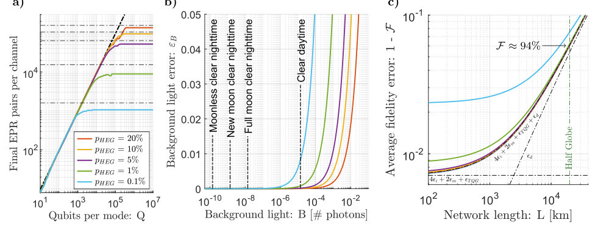
<figcaption class="paper-figure-caption"><b>Fig 3.</b> Figure 3: Performance of our scheme with respect to different parameters. In all figures the line colors represent different HEG success probabilities, as defined in the legend of part a). η0 = 0.8 is assumed. a) Simulated average number of EPR pairs distributed for a satellite with Q qubits without multiplexing. In the linear region, over 98% of the qubits end up as EPR pairs, regardless of channel efficiency. Black horizontal lines denote the theoretical maximum of distributed EPR pairs in accordance with Equation (2). It is assumed that tHEG = 20 µs, tswap = 210 µs [26] and a satellite altitude of 250 km, corresponding to a VLEO orbit. At this altitude, a trial efficiency of pHEG = 17%...</figcaption>
</figure>
</div>

<p><strong>Summary.</strong> The paper proposes a novel, highly efficient method for distributing entanglement globally using satellites equipped with rare-earth ion qubits. It models the entire process—from atmospheric channel loss to multi-stage entanglement swapping—to demonstrate that this transportation-based repeater scheme is superior to existing proposals. This work advances the feasibility roadmap for global quantum internet infrastructure.</p>
<p><strong>Why it may be interesting.</strong> This work directly addresses the engineering challenges of scaling quantum networks by providing a detailed theoretical framework for overcoming distance limitations inherent in photonic quantum communication.</p>
<details>
<summary>Detailed structure</summary>
<p><strong>Main problem.</strong> The primary goal is to develop a viable scheme for distributing quantum entanglement over global distances using satellite links.</p>
<p><strong>Main result.</strong> A transportation-based, quantum repeater approach utilizing rare-earth ion qubits in satellites is theoretically shown to outperform other methods by minimizing link losses and achieving high fidelity (e.g., 93.9% globally).</p>
<p><strong>Method.</strong> The analysis combines theoretical modeling of free-space optical channel losses with quantum information protocols like heralded entanglement generation and deterministic entanglement swapping.</p>
<p><strong>Model / system.</strong> The system involves ground stations connected via Very Low Earth Orbit (VLEO) satellites carrying nodes based on rare-earth-ion qubits. The process models the sequential steps of generating, storing, and swapping entangled pairs across multiple passes.</p>
<p><strong>Key observables.</strong> EPR pair fidelity ($F$), entanglement generation probability ($p_{HEG}$), achievable rate ($   ext{N}_{    ext{tot}}$), and background light induced error ($\epsilon_B$).</p>
<p><strong>Important parameters / regimes.</strong> VLEO altitude (250 km), coherence time ($T_2 > 13$ hours), sky brightness ($H_b$), and various loss coefficients ($\eta_{at}, \eta_{SMF}$).</p>
<p><strong>Assumptions / limitations.</strong> The scheme assumes the feasibility of active error correction, sufficient qubit coherence times, and that background light noise can be quantified using Poisson statistics.</p>
<p><strong>Figures summary.</strong> Figures illustrate the entanglement distribution process (Satellite $  o$ Ground $ o$ Swapping), performance comparisons between different protocols (e.g., transport vs. memory-based), and the dependence of fidelity on network length or error sources.</p>
<p><strong>Paper structure.</strong> The paper progresses from establishing the physical link efficiency ($\eta_c$) via atmospheric modeling, to developing the quantum protocol using Markov chains for pair generation, and finally comparing this repeater scheme against direct relaying or memory-limited approaches.</p>
</details>
<details>
<summary>Abstract</summary>
<p>We propose a scheme for distributing entanglement over global distances in a heralded manner by using satellites to physically transport entangled processor nodes with rare-earth-ion qubits. A full analysis of channel losses, errors and background light is performed to determine the fidelity and number of entangled pairs that can be distributed between two ground stations. We show that the scheme works already with a single satellite and can distribute close to the theoretical maximum number of entangled pairs that can be generated in a satellite overpass. In addition, we argue that in theory transportation-based schemes outperform other satellite-based schemes and can be scaled up to a constellation without additional channel losses. Daytime operation seems feasible as long as the sky is clear, with an EPR pair fidelity ranging from 99.3% at shorter network lengths to 93.9% with global coverage and can be further improved by active error correction or entanglement purification.</p>
</details>
<p><sub><a href="#top">↑ back to top</a></sub></p>

<p><a id="paper-2606.16090"></a></p>
<h3 id="enhancing-quantum-machine-learning-with-anyons"><a href="http://arxiv.org/abs/2606.16090v1">Enhancing Quantum Machine Learning with Anyons</a></h3>
<p><strong>Authors:</strong> Da Zhang, Wen-Qiang Liu, Zhaohui Wei, Zhang-Qi Yin<br>
<strong>Type:</strong> theory · <strong>Category:</strong> quantum information and computing · <strong>PDF:</strong> <a href="https://arxiv.org/pdf/2606.16090v1">https://arxiv.org/pdf/2606.16090v1</a><br>
<strong>Analysis basis:</strong> full PDF text, analyzed in chunks
<strong>Topic relevance:</strong> <code>analog quantum simulation</code> <strong>2/5</strong> · <code>entanglement &amp; information structure</code> <strong>1/5</strong> · <code>interference shaping light</code> <strong>1/5</strong> · <code>quantum optics experiment</code> <strong>1/5</strong></p>
<div class="figure-strip-hint">↔ Scroll figures horizontally</div>
<div class="paper-figures-scroll">
<figure class="paper-figure-card">
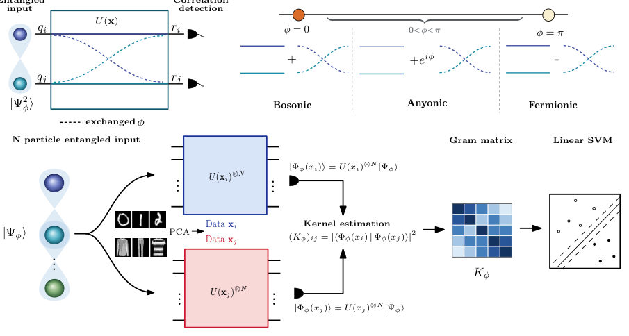
<figcaption class="paper-figure-caption"><b>Fig 1.</b> FIG. 1. a, Two-particle implementation of the encoded exchange phase. The entangled input con-</figcaption>
</figure>
<figure class="paper-figure-card">
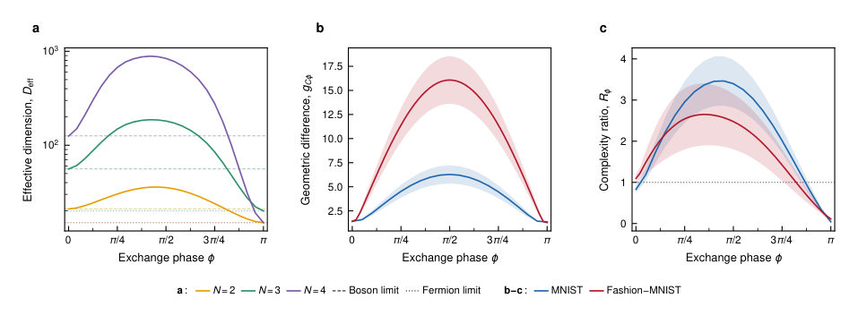
<figcaption class="paper-figure-caption"><b>Fig 2.</b> FIG. 2. a, Effective dimension Deff of the fractional-statistics feature map as a function of the</figcaption>
</figure>
<figure class="paper-figure-card">
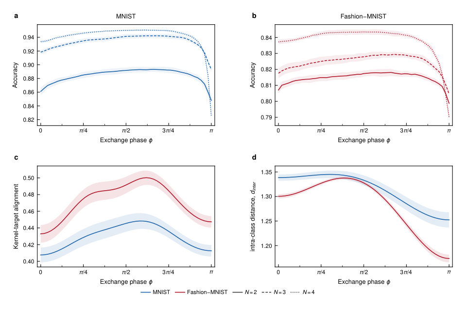
<figcaption class="paper-figure-caption"><b>Fig 3.</b> FIG. 3. a, Test accuracy of kernel SVM classifiers on MNIST as a function of the exchange phase</figcaption>
</figure>
</div>

<p><strong>Summary.</strong> This work introduces particle exchange statistics as a novel computational resource for Quantum Machine Learning. By constructing kernels that smoothly interpolate between bosonic and fermionic limits using photonic simulation, the authors show that intermediate 'anyon' statistics significantly enhance feature space geometry and classification accuracy over standard limits.</p>
<p><strong>Why it may be interesting.</strong> It provides a concrete physical mechanism—particle statistics—to tune the representational power of quantum circuits for ML tasks, bridging fundamental condensed matter concepts (anyons) with applied quantum computation.</p>
<details>
<summary>Detailed structure</summary>
<p><strong>Main problem.</strong> To investigate whether particle exchange statistics can serve as an intrinsic, physical design principle for enhancing Quantum Machine Learning (QML).</p>
<p><strong>Main result.</strong> Anyonic kernels consistently outperform their bosonic and fermionic counterparts on classification benchmarks, demonstrating that exchange statistics fundamentally reshape the quantum feature space structure.</p>
<p><strong>Method.</strong> The authors constructed a quantum kernel family interpolating between bosonic, fermionic, and anyonic statistics using photonic encoding. They analyzed this framework by calculating effective dimension, kernel geometry diagnostics, and direct machine learning performance.</p>
<p><strong>Model / system.</strong> The model uses an N-particle quantum feature state $|\Phi_\phi(\mathbf{x})
angle$ derived from linear optical unitaries applied to entangled photons, where the exchange phase $\phi$ controls the statistics. This simulates fractional exchange behavior.</p>
<p><strong>Key observables.</strong> Test accuracy on MNIST/Fashion-MNIST; Effective Dimension ($D_{	ext{eff}}(\phi)$); Geometric diagnostic ($gC_\phi$); Model complexity ratio ($R_\phi$).</p>
<p><strong>Important parameters / regimes.</strong> Exchange Phase ($\phi$), which controls the statistics (Bosonic $\phi=0$, Fermionic $\phi=\pi$, Anyonic $0 < \phi < \pi$).</p>
<p><strong>Assumptions / limitations.</strong> The model simplifies physical anyons by reducing the braid structure to permutations, retaining only the exchange phase information.</p>
<p><strong>Figures summary.</strong> Figures show that intermediate fractional phases maximize effective dimension and geometric separation. Test accuracy plots confirm peak performance at intermediate $\phi$, while KTA and inter-class distance diagnostics also favor these non-integer statistics.</p>
<p><strong>Paper structure.</strong> The paper systematically analyzes the quantum kernel across different exchange phases ($\phi$). It first establishes the theoretical framework using particle state preparation, then quantifies the enhancement via feature space analysis (dimension/geometry), and finally validates the findings through supervised learning benchmarks.</p>
</details>
<details>
<summary>Abstract</summary>
<p>The power of quantum computing and quantum machine learning relies on harnessing uniquely quantum phenomena as computational resources. While superposition, coherence and entanglement have been central to this effort, the role of particle exchange statistics remains largely unexplored. Here, we introduce a quantum kernel framework that unifies bosonic, fermionic, and anyonic (fractional) exchange statistics within a single learning paradigm. We study this family of kernels from three perspectives. At the representation level, Haar-averaged effective-dimension analysis shows that fractional exchange phases access feature-space directions inaccessible to the purely symmetric or antisymmetric limits. At the level of kernel geometry, the corresponding Gram matrices show greater separation from the distinguishable-particle baseline and reduced label-dependent model complexity. Finally, on learning benchmarks, anyonic kernels consistently outperform their bosonic and fermionic counterparts, with stronger target alignment and more favorable class geometry. Together, these findings show that exchange statistics reshape the structure and geometry of quantum feature space, leading to enhanced learning performance. Our work identifies particle exchange statistics as an overlooked computational ingredient for quantum machine learning and provides the first systematic comparison of quantum learning models across exchange phases.</p>
</details>
<p><sub><a href="#top">↑ back to top</a></sub></p>

<p><a id="paper-2606.16719"></a></p>
<h3 id="connectivity-and-rigidity-in-borosilicate-glasses"><a href="http://arxiv.org/abs/2606.16719v1">Connectivity and Rigidity in Borosilicate Glasses</a></h3>
<p><strong>Authors:</strong> Richard Kerner<br>
<strong>Type:</strong> theory · <strong>Category:</strong> disordered systems and neural networks · <strong>PDF:</strong> <a href="https://arxiv.org/pdf/2606.16719v1">https://arxiv.org/pdf/2606.16719v1</a><br>
<strong>Analysis basis:</strong> full PDF text, analyzed in chunks
<strong>Topic relevance:</strong> <code>driven-dissipative phase transition</code> <strong>2/5</strong> · <code>Frenkel-Kontorova</code> <strong>1/5</strong> · <code>Keldysh / 2PI / non-Gaussian methods</code> <strong>1/5</strong></p>
<div class="figure-strip-hint">↔ Scroll figures horizontally</div>
<div class="paper-figures-scroll">
<figure class="paper-figure-card">
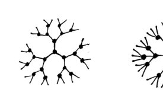
<figcaption class="paper-figure-caption"><b>Fig 1.</b> Figure 1: Three Bethe lattices made of 3, 4 and 5-coordinated atoms</figcaption>
</figure>
<figure class="paper-figure-card">
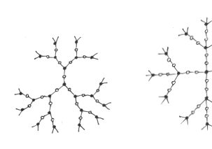
<figcaption class="paper-figure-caption"><b>Fig 2.</b> Figure 2: The same Bethe lattices diluted with 2-valenced atoms.</figcaption>
</figure>
<figure class="paper-figure-card">
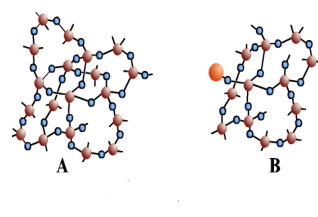
<figcaption class="paper-figure-caption"><b>Fig 3.</b> Figure 4: The pairs of bonds pointing towards closest neighbors give rise to closed rings. A simple combinatorics gives their numbers: 6 distinct rings around each Q4 unit (A), three rings only around each Q3 unit (B), and as much as 15 rings around each pair of silicon atoms “zipped” together by a Ca atom (C).</figcaption>
</figure>
<figure class="paper-figure-card">
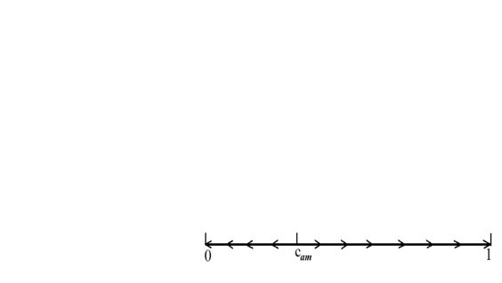
<figcaption class="paper-figure-caption"><b>Fig 4.</b> Figure 6: Two diagrams representing the behavior of the system: a) with stable solutions at c = 0 and c = 1, b) with stable solution at c = cam</figcaption>
</figure>
<figure class="paper-figure-card">
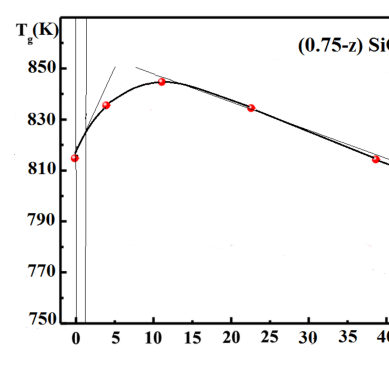
<figcaption class="paper-figure-caption"><b>Fig 5.</b> Figure 11: The curve Tg(z) displays three distinct phases: firstly, from floppy to isostatic composition, 0 &lt; z &lt; 0.10, secondly, the isostatic region 0.10 &lt; z &lt; 0.15, and finally a linear behavior accompanying the steadily decreasing rigidity of the floppy network</figcaption>
</figure>
</div>

<p><strong>Summary.</strong> This work applies theoretical models, including Stochastic Agglomeration Theory and constraint analysis, to understand the structural stability and glass transition temperature of borosilicate glasses. By linking local network connectivity (isostaticity) to overall composition, the authors successfully predict how varying the $  ext{B}_2    ext{O}_3$ content affects the material's physical properties.</p>
<p><strong>Why it may be interesting.</strong> The application of topological concepts like isostaticity and network connectivity to predict macroscopic phase transitions ($T_g$) in amorphous materials bridges solid-state physics with graph theory, which has parallels in complex system modeling relevant to quantum networks.</p>
<details>
<summary>Detailed structure</summary>
<p><strong>Main problem.</strong> To validate simple mathematical models for glass transition by applying them to borosilicate glasses, linking structural constraints (isostaticity) to macroscopic properties like the glass transition temperature ($T_g$).</p>
<p><strong>Main result.</strong> The stochastic agglomeration model successfully predicts the $T_g(z)$ dependence on modifier concentration, and isostaticity theory provides necessary compositional constraints for optimal network structure.</p>
<p><strong>Method.</strong> Theoretical modeling combining concepts from constraint theory (isostaticity) with statistical mechanics principles derived from an agglomeration model.</p>
<p><strong>Model / system.</strong> The system studied is a mixture of $    ext{SiO}_2$ and $   ext{B}_2    ext{O}_3$ glass formers modified by $   ext{Na}_2   ext{O}$ and $   ext{CaO}$. The theory uses structural units ($    ext{Q}^4,   ext{Q}^3$) and analyzes network connectivity via constraints to predict stability.</p>
<p><strong>Key observables.</strong> Glass transition temperature ($T_g(z)$), average coordination number ($\langle m 
angle$), constraint ratio ($   ext{N}_c/   ext{N}_a$), and structural rigidity defect ($r$).</p>
<p><strong>Important parameters / regimes.</strong> Modifier concentrations (e.g., $z$ for $   ext{B}_2    ext{O}_3$), optimal coordination number ($m=2.4$), and temperature dependence parameters derived from energy barriers.</p>
<p><strong>Assumptions / limitations.</strong> The system can be modeled by stochastic agglomeration, the network structure is governed by local constraints (isostaticity), and structural integrity requires maintaining a specific average ring count (near 6).</p>
<p><strong>Figures summary.</strong> Figures illustrate Bethe lattices used to model connectivity and show the evolution of $T_g(z)$ across different compositions.</p>
<p><strong>Paper structure.</strong> The paper progresses from establishing the physical system (borosilicate glasses) to applying theoretical tools: first, constraint theory determines optimal local structure ($\langle m 
angle = 2.4$); second, ring counting provides compositional constraints; finally, the stochastic agglomeration model predicts the temperature dependence of $T_g$.</p>
</details>
<details>
<summary>Abstract</summary>
<p>We present a structural analysis of glasses formed by mix of SiO2 and B2O3 glass formers with soda and lime modifiers (Na2O and CaO), which provide a good testing ground for Stochastic Agglomeration Theory. With local structural units properly identified, we can reproduce the one-parameter glass transition temperature T_g (z) curve for the family of (0.75-z) SiO_2 + 0.15 Na_2O + 0.10 CaO + z B_2O_3 glasses studied experimentally by Smedskjaer et al.</p>
</details>
<p><sub><a href="#top">↑ back to top</a></sub></p>

<p><a id="paper-2606.16622"></a></p>
<h3 id="intervalley-coherence-and-flavor-polarization-in-three-valley-moire-systems"><a href="http://arxiv.org/abs/2606.16622v1">Intervalley coherence and flavor polarization in three-valley moiré systems</a></h3>
<p><strong>Authors:</strong> Jeyong Park, Laura Classen, Mathias S. Scheurer<br>
<strong>Type:</strong> theory · <strong>Category:</strong> strongly correlated electrons · <strong>PDF:</strong> <a href="https://arxiv.org/pdf/2606.16622v1">https://arxiv.org/pdf/2606.16622v1</a><br>
<strong>Analysis basis:</strong> full PDF text, analyzed in chunks
<strong>Topic relevance:</strong> <code>analog quantum simulation</code> <strong>2/5</strong> · <code>Keldysh / 2PI / non-Gaussian methods</code> <strong>1/5</strong></p>
<div class="figure-strip-hint">↔ Scroll figures horizontally</div>
<div class="paper-figures-scroll">
<figure class="paper-figure-card">
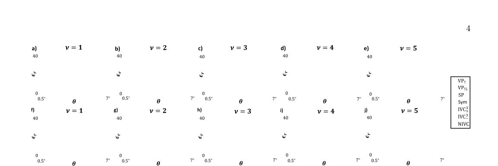
<figcaption class="paper-figure-caption"><b>Fig 1.</b> FIG. 2: Hartree-Fock phase diagram. In each panel, we show the character of the ground state (color, see legend) at the indicated filling ν as a function of twist angle θ and relative permittivity ϵr, which parametrizes the interaction strength Vq ∝1/ϵr in Eq. (3). The first (a-e) and second line (f-j) refers to AA and AB stacking, respectively. The ground states involve valley- (VP) and spin-polarized (SP) states, IVC phases (IVC3 ± and NIVC), as well as a symmetry unbroken state (Sym). See main text for precise definition. A cross (no cross) stands for gapless (gapped) phase. The system size is 12 × 12.</figcaption>
</figure>
<figure class="paper-figure-card">
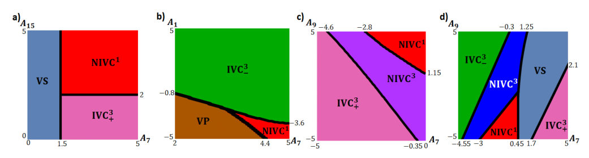
<figcaption class="paper-figure-caption"><b>Fig 2.</b> FIG. 3: Ginzburg-Landau phase diagram for different combinations of parameters specified in the text in Appendix B. VS stands for “valley symmetric”, which means that no symmetry is broken; meanwhile, all other phases are defined in the main text and Table I. We point out that for the NIVC3 state in (c) and (d), we get φ123 = 0 and φ123 = π, respectively, and we used different colors in the phase diagram to display them.</figcaption>
</figure>
<figure class="paper-figure-card">
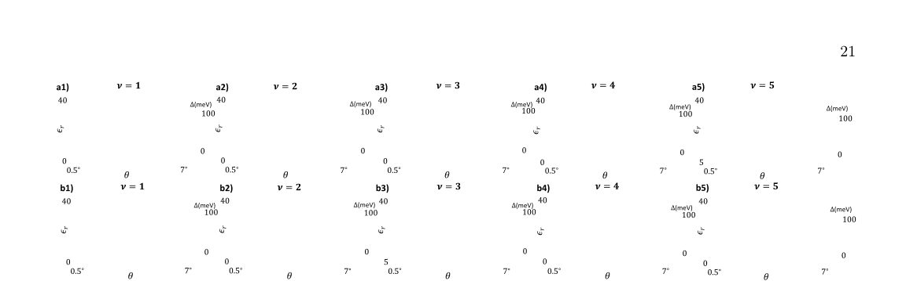
<figcaption class="paper-figure-caption"><b>Fig 3.</b> FIG. 4: HF band-gap of AA and AB stacking Indirect band-gap ∆obtained from HF as function of twist angle θ and relative permittivity ϵr for (a1 - a5) AA stacking and (b1 - b5) AB stacking at each integer filling. The system size is 12×12.</figcaption>
</figure>
<figure class="paper-figure-card">
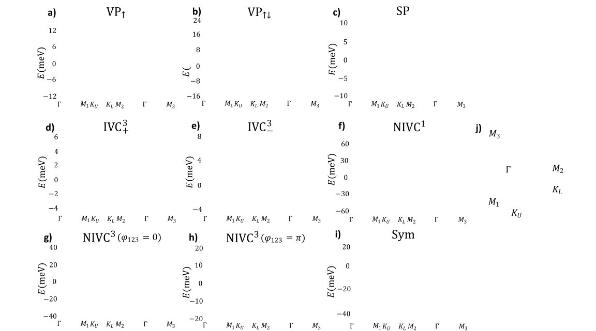
<figcaption class="paper-figure-caption"><b>Fig 4.</b> FIG. 5: HF band structure of AA stacking for each ground states HF band structure in the case of AA stacking along the high symmetry momentum path (Γ −M1 −KU −KL −M2 −Γ −M3) described in (j) for each ground state: (a) VP↑(ν = 2, θ = 3◦, ϵr = 15), (b) VP↑↓(ν = 2, θ = 3◦, ϵr = 15), (c) SP (ν = 3, θ = 3◦, ϵr = 20), (d) IVC3 + (ν = 1, θ = 1◦, ϵr = 15), (e) IVC3 −(ν = 2, θ = 1◦, ϵr = 15), (f) NIVC1 (ν = 2, θ = 6◦, ϵr = 5), (g) NIVC3 (φ123 = 0, ν = 1, θ = 6◦, ϵr = 10), (h) NIVC3 (φ123 = π, ν = 2, θ = 4◦, ϵr = 15) and (i) Sym (ν = 5, θ = 7◦, ϵr = 20). The Fermi level is located at zero energy in every figure. The system size is 12 × 12.</figcaption>
</figure>
</div>

<p><strong>Summary.</strong> This theoretical work explores emergent electronic orders in three-valley moiré superlattices. By analyzing symmetries and using advanced mean-field techniques, the authors map out a phase diagram showing competition between valley-polarized and intervalley-coherent states. The findings highlight that complex correlated physics, distinct from simpler two-valley systems like graphene, dictates the ground state depending on stacking geometry and interaction strength.</p>
<p><strong>Why it may be interesting.</strong> The detailed symmetry analysis and classification of correlated phases in a multi-valley system provide a template for understanding complex electronic ordering driven by geometry, relevant to topological materials and strongly interacting quantum systems.</p>
<details>
<summary>Detailed structure</summary>
<p><strong>Main problem.</strong> The study investigates interaction-induced symmetry breaking and determines the energetically favored ground state orders (IVC vs. flavor-polarized) in moiré superlattices possessing three electronic valleys.</p>
<p><strong>Main result.</strong> The system exhibits a rich variety of intervalley-coherent (IVC) phases, which can be stabilized either by superexchange at moderate bandwidths or deep within the strong-coupling regime due to deviations from flat-metric conditions.</p>
<p><strong>Method.</strong> The analysis combines symmetry arguments with advanced theoretical techniques, including unrestricted Hartree-Fock calculations and analytical strong-coupling frameworks applied to a continuum model.</p>
<p><strong>Model / system.</strong> The system is modeled as moiré superlattices formed by twisting two identical materials whose low-energy physics resides near the M points, featuring three distinct valleys ($\eta=1, 2, 3$). The Hamiltonian incorporates both single-particle dispersion and repulsive density-density interactions.</p>
<p><strong>Key observables.</strong> Valley Polarization (VP) order parameters, Intervalley Coherent Order parameters ($    ext{IVC}_{3\pm}$, NIVC), and the resulting band structure gaps/insulating nature.</p>
<p><strong>Important parameters / regimes.</strong> Twist angle ($  heta$), interaction strength parameterized by relative permittivity ($\epsilon_r$), and electron filling fraction ($
u$).</p>
<p><strong>Assumptions / limitations.</strong> The analysis relies on mean-field decoupling (Hartree-Fock) and often assumes the strong-coupling limit or uses perturbation theory to treat deviations from ideal conditions.</p>
<p><strong>Figures summary.</strong> Figures illustrate moiré band structures, phase diagrams mapping ground state character ($ ext{VP}$, $ ext{IVC}$ phases) against parameters like $ heta$ and $\epsilon_r$, and order parameter dependencies on these tuning knobs.</p>
<p><strong>Paper structure.</strong> The paper progresses by first establishing the symmetry constraints of the three-valley system, then applying strong-coupling/Hartree-Fock methods to map out candidate ordered states ($  ext{IVC}$ vs. $ ext{VP}$), and finally using perturbation theory to determine which state minimizes the total energy under varying physical conditions.</p>
</details>
<details>
<summary>Abstract</summary>
<p>We investigate interaction-induced symmetry breaking in moiré superlattices created by twisting two identical materials where the electronic low-energy degrees of freedom reside in the vicinity of the $M$ points. Based on general symmetry arguments, we identify and classify the possible candidate instabilities that, besides flavor polarized states, also involve a variety of intervalley-coherent (IVC) orders. This complexity is related primarily to the presence of three valleys, instead of the well-studied scenario of two, e.g., in graphene: IVC states can couple all three valleys identically, with a non-trivial sign structure, or even with different magnitudes. We study the energetics using an analytical strong-coupling framework and unrestricted Hartree-Fock applied to the full continuum model, with very good agreement between the two approaches. Interestingly, depending on stacking, IVC instabilities not only appear due to superexchange at moderate bandwidths, but also deep in the strong-coupling regime as a result of deviations from the flat-metric condition. Our work demonstrates that twisted $M$-point materials provide a rich playground for complex correlated physics and highlights differences and similarities to twisted multilayer graphene.</p>
</details>
<p><sub><a href="#top">↑ back to top</a></sub></p>

<p><a id="paper-2606.15801"></a></p>
<h3 id="maps-a-novel-multi-axial-projective-sphere-for-geometrically-visualizing-higher-d-valued-quantum-state-space-of-qudits"><a href="http://arxiv.org/abs/2606.15801v1">MAPS: A Novel Multi-Axial Projective Sphere for Geometrically Visualizing Higher d-Valued Quantum State-Space of Qudits</a></h3>
<p><strong>Authors:</strong> Ali Al-Bayaty<br>
<strong>Type:</strong> theory · <strong>Category:</strong> quantum information and computing · <strong>PDF:</strong> <a href="https://arxiv.org/pdf/2606.15801v1">https://arxiv.org/pdf/2606.15801v1</a><br>
<strong>Analysis basis:</strong> full PDF text, analyzed in chunks
<strong>Topic relevance:</strong> <code>analog quantum simulation</code> <strong>2/5</strong> · <code>entanglement &amp; information structure</code> <strong>1/5</strong></p>
<div class="figure-strip-hint">↔ Scroll figures horizontally</div>
<div class="paper-figures-scroll">
<figure class="paper-figure-card">
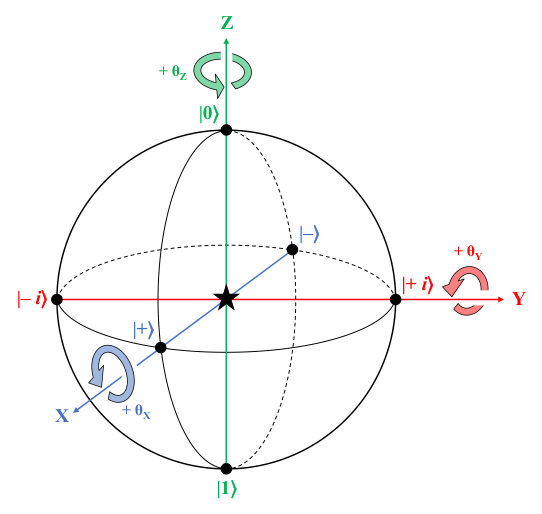
<figcaption class="paper-figure-caption"><b>Fig 1.</b> Figure 1: The Bloch sphere with three intersecting spatial axes (X, Y, and Z) for visualizing a qubit of: (i) six pure states (the circles) at the boundary ∥r∥= 1, where the |0⟩and |1⟩states intersecting the Z-axis, the |+⟩and |−⟩states intersecting the X-axis, and the |+i⟩and |−i⟩states intersecting the Y-axis, and (ii) one maximally mixed state (the star) at the origin r = 0.</figcaption>
</figure>
<figure class="paper-figure-card">
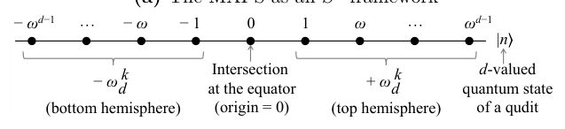
<figcaption class="paper-figure-caption"><b>Fig 2.</b> Figure 2: The geometrical construction of our generalized MAPS for visualizing d-valued quantum states of a qudit using: (a) an S2 framework, and (b) n intersecting spatial axes, where d ≥3, d −1 ≤n ≤0, ∆d = 2π/d radians, δazm = π/z radians, k ∈Z, z ∈R, and the black circles indicate the distinct relative phases of +ωk d and −ωk d.</figcaption>
</figure>
<figure class="paper-figure-card">
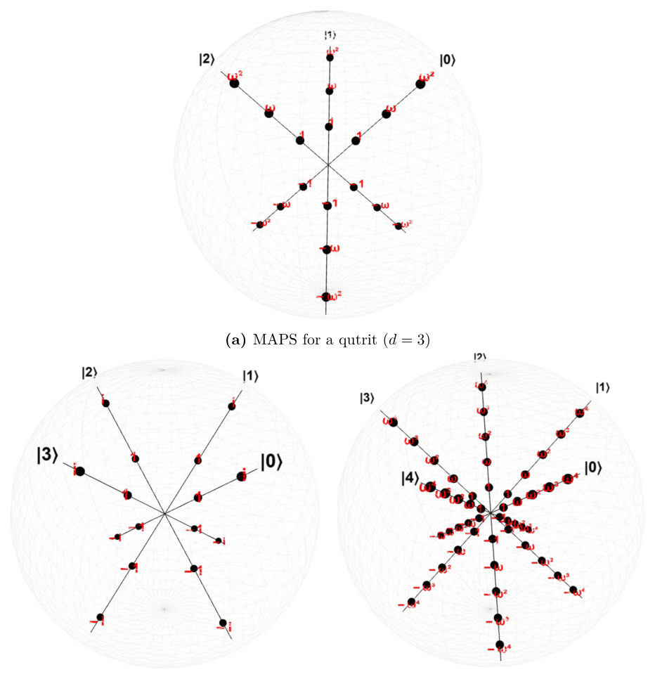
<figcaption class="paper-figure-caption"><b>Fig 3.</b> Figure 3: Three MAPS visualizing: (a) the 3-valued quantum states of a qutrit, where ±ωk 3 = {±1, ±ω, ±ω2} and ∆3 = 2π/3 radians, (b) the 4-valued quantum states of a ququadit, where ±ωk 4 = {±1, ±i} and ∆4 = π/2 radians, and (c) the 5-valued quantum states of a quintit, where ±ωk 5 = {±1, ±ω, ±ω2, ±ω3, ±ω4} and ∆5 = 2π/5 radians. Notice that δazm = π/4 radians for all three MAPS [46].</figcaption>
</figure>
<figure class="paper-figure-card">
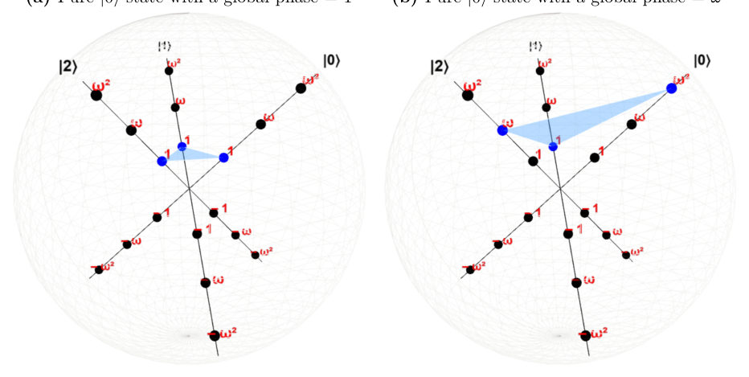
<figcaption class="paper-figure-caption"><b>Fig 4.</b> Figure 4: Four MAPS visualizing the pure and mixed states of qutrits (d = 3) with the global phases of: (a) 1, i.e., |0⟩= [1, 0, 0]T, (b) ω2, i.e., ω2|0⟩= [ω2, 0, 0]T = ω2[1, 0, 0]T, (c) 1, i.e., 1 √</figcaption>
</figure>
<figure class="paper-figure-card">
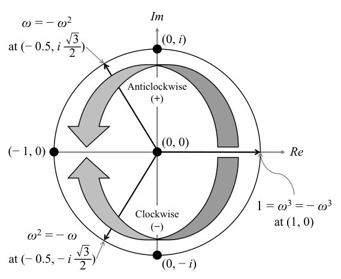
<figcaption class="paper-figure-caption"><b>Fig 5.</b> Figure 5: The two-dimensional phase plane (a real-imaginary unit circle) to calculate the phase periodicity for a qutrit (d = 3) of ±ωk 3 = ω3+α 3 = ωα 3 = −ω3−β 3 , where k = 3+α, β = k mod 3, and ∀k, α, β ∈Z.</figcaption>
</figure>
</div>

<p><strong>Summary.</strong> This paper introduces the Multi-Axial Projective Sphere (MAPS) as a novel geometric framework designed to overcome the visualization limitations encountered when representing qudit quantum states ($d \ge 3$). It successfully maps these complex state spaces onto an intuitive $S^2$ structure using multiple intersecting axes. Furthermore, the authors propose phase-axial gates ($   ext{PASS}_d$) that allow for controlled manipulation and transformation of these high-dimensional quantum states.</p>
<p><strong>Why it may be interesting.</strong> For AMO/open systems researchers, this work provides a powerful conceptual tool to visualize complex high-dimensional phase spaces that might otherwise require intractable mathematical formalism, potentially aiding the understanding of multi-level atomic or superconducting qubit interactions.</p>
<details>
<summary>Detailed structure</summary>
<p><strong>Main problem.</strong> The core problem is developing a generalized visualization framework for the high-dimensional quantum state-space of qudits ($d \ge 3$), as standard methods like the Bloch sphere fail beyond qubits.</p>
<p><strong>Main result.</strong> The authors introduce the Multi-Axial Projective Sphere (MAPS), a novel $S^2$ framework that successfully visualizes global and relative phases for higher-$d$ qudit states. They also propose associated phase-axial gates ($ ext{PASS}_d$) to manipulate these states geometrically.</p>
<p><strong>Method.</strong> The method involves constructing the MAPS using $n$ intersecting spatial axes, which provides a structural generalization of the Bloch sphere by mapping complex state spaces onto an easily visualized 3D manifold. Novel unitary gates are defined based on phase rotations along these axes.</p>
<p><strong>Model / system.</strong> The system under study is the qudit, characterized by $d$-valued quantum states $|\psi
angle$ and density operators $
ho$. The mathematical framework relies on generalizing concepts from $  ext{SU}(2)$ to $    ext{SU}(d)$.</p>
<p><strong>Key observables.</strong> Global and relative phases of the quantum state; visualization of pure states (circles) and mixed states (polygons/polyhedra).</p>
<p><strong>Important parameters / regimes.</strong> The dimension $d$ of the qudit ($d \ge 3$), the number of axes $n$, and pseudo-orthogonal angles $\Delta_d = 2\pi/d$.</p>
<p><strong>Assumptions / limitations.</strong> The primary assumption is that a generalized, simplified geometric representation (MAPS) can capture the essential topological features of high-$d$ quantum state spaces for visualization purposes.</p>
<p><strong>Figures summary.</strong> Figures illustrate the Bloch sphere ($d=2$), and then show specific MAPS constructions for $d=3, 4, 5$. Subsequent figures demonstrate how mixed states are visualized as polygons and how $   ext{PASS}_d$ gates perform controlled swiveling and shifting of these phases.</p>
<p><strong>Paper structure.</strong> The paper establishes the limitations of existing visualizations (Bloch sphere failure for $d \ge 3$), introduces MAPS as the solution, details its geometric construction using multiple axes, proposes the $  ext{PASS}_d$ gate operation, and concludes with examples showing state transformations and potential applications in quantum machine learning.</p>
</details>
<details>
<summary>Abstract</summary>
<p>Visualizing the d-valued quantum state-space of quantum systems serves as a foundational pillar for the scientific research and practical applications in quantum computing and information science, where d &gt;= 2. The 2-valued quantum states of a qubit are elegantly visualized on the three-dimensional Bloch sphere. In contrast, expanding this geometrical paradigm to visualize higher d-valued quantum states of a qudit (d &gt;= 3), e.g., a qutrit (d=3), ququadit (d=4), and quintit (d=5), leads to severe structural and topological complexities. This paper introduces a new generalized three-dimensional framework to effectively visualize higher d-valued quantum states of a qudit, in the aspects of ease of illustration, structural simplicity, and natural representation for researchers and engineers. We called this new framework the "multi-axial projective sphere (MAPS)", which consists of n projectional intersecting spatial axes, where d-1 &lt;= n &lt;= 0. We also propose a group of novel d-valued phase axial-based gates, to swivel and shift d-valued quantum states of a qudit along these n axes. Our generalized framework could be used for visualizing high-dimensional data for practical applications, e.g., machine learning, quantum machine learning, and quantum chemistry, where every axis of the MAPS represents a single feature of such data with its corresponding distinct values.</p>
</details>
<p><sub><a href="#top">↑ back to top</a></sub></p>

<p><a id="paper-2606.15586"></a></p>
<h3 id="quantum-illumination-with-symmetry-constrained-random-unitaries"><a href="http://arxiv.org/abs/2606.15586v1">Quantum Illumination with Symmetry-Constrained Random Unitaries</a></h3>
<p><strong>Authors:</strong> Sooryansh Asthana, Sai Vinjanampathy<br>
<strong>Type:</strong> theory · <strong>Category:</strong> quantum information and computing · <strong>PDF:</strong> <a href="https://arxiv.org/pdf/2606.15586v1">https://arxiv.org/pdf/2606.15586v1</a><br>
<strong>Analysis basis:</strong> full PDF text, analyzed in chunks
<strong>Topic relevance:</strong> <code>entanglement &amp; information structure</code> <strong>2/5</strong> · <code>quantum measurements</code> <strong>1/5</strong></p>
<div class="figure-strip-hint">↔ Scroll figures horizontally</div>
<div class="paper-figures-scroll">
<figure class="paper-figure-card">
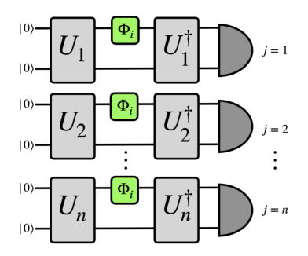
<figcaption class="paper-figure-caption"><b>Fig 1.</b> FIG. 1. Schematic of QI with Haar-random probes. For each channel use j, a Haar-random unitary Uj prepares a random signal–idler probe from the fiducial state |00⟩. The signal mode is subjected to one of two competing channel hypothe- ses Φ0 (target absent) or Φ1 (target present), while the idler is retained. Using the classical record of the sampled unitary, the receiver applies U † j and performs the final measurement. The accumulated measurement outcomes over many indepen- dent realizations are used to distinguish the two hypotheses.</figcaption>
</figure>
</div>

<p><strong>Summary.</strong> The paper analyzes Quantum Illumination by replacing idealized entangled probes with generic Haar-random states constrained by symmetry. It rigorously proves that the achievable detection rate is determined solely by the dimension of the accessible symmetry sector, establishing a deep connection between quantum channel discrimination and conservation laws in many-body physics.</p>
<p><strong>Why it may be interesting.</strong> This work provides a powerful theoretical generalization for quantum sensing protocols, demonstrating that structural symmetries inherent in physical systems can dictate fundamental resource limits, shifting focus from state preparation to subspace engineering.</p>
<details>
<summary>Detailed structure</summary>
<p><strong>Main problem.</strong> The paper investigates Quantum Illumination (QI), a quantum-assisted protocol for detecting weakly reflecting objects in noisy environments, by analyzing its performance using random probe states.</p>
<p><strong>Main result.</strong> The asymptotic detection advantage is governed not by the total Hilbert space dimension but by the dimension of the accessible symmetry-protected correlation subspace. This shows that generic many-body states constrained by conservation laws can yield near-optimal quantum hypothesis testing resources.</p>
<p><strong>Method.</strong> The analysis employs tools from quantum channel discrimination and asymptotic hypothesis testing, specifically calculating the quantum Chernoff exponent ($ar{\xi}$) for ensembles generated by Haar-random unitaries restricted to symmetry-resolved subspaces.</p>
<p><strong>Model / system.</strong> The model is Quantum Illumination (QI), which treats target detection as distinguishing between two competing quantum channels ($\Phi_0$ vs $\Phi_1$) acting on a signal-idler probe system. The probes are generated using random unitaries sampled from the Haar measure, constrained by symmetry.</p>
<p><strong>Key observables.</strong> The primary observable is the asymptotic Chernoff exponent ($ar{\xi}$), which quantifies the exponential decay rate of the minimum error probability in distinguishing the two channels.</p>
<p><strong>Important parameters / regimes.</strong> Key parameters include the dimension of the accessible symmetry sector ($d_\lambda$), the noise strength, and the probe state structure (Haar-random vs. maximally entangled).</p>
<p><strong>Assumptions / limitations.</strong> The analysis assumes that the random unitaries are sampled from the Haar measure ($\mu_H$) and relies on concentration inequalities to relate the ensemble average exponent to the mean value.</p>
<p><strong>Figures summary.</strong> Figure 1 schematically illustrates QI using Haar-random probes with a fiducial state, demonstrating the theoretical framework for the analysis.</p>
<p><strong>Paper structure.</strong> The paper progresses by first establishing QI as a channel discrimination problem (Chunk 2), then generalizing the probe states to random unitaries (Haar measure) (Chunk 3). It then develops the core theory by analyzing how symmetry constraints restrict the accessible correlations, showing that the rate is governed by the symmetry sector dimension rather than the full space dimension (Chunks 4 &amp; 5).</p>
</details>
<details>
<summary>Abstract</summary>
<p>Quantum illumination provides a quantum advantage in detecting weakly reflecting objects embedded in a noisy environment, even when environmental noise destroys most of the initial entanglement. We investigate this advantage using Haar-random probe states constrained to symmetry-resolved subspaces. Employing tools from quantum channel discrimination and asymptotic hypothesis testing, we derive the discrimination exponents associated with Haar-random probe ensembles and identify the role of symmetry in determining their performance. We show that typical states drawn from fixed-charge sectors achieve the same asymptotic quantum-illumination advantage as maximally entangled probes. In particular, we show that the effective thermal-noise suppression and the corresponding Chernoff exponent are governed by the dimension of the accessible symmetry sector. Our results reveal that the operational resource underlying quantum illumination can be generalized from fine-tuned structure of a specific probe state to the existence of a large symmetry-protected correlation subspace. These findings establish a direct connection between quantum illumination, symmetry-resolved typicality, and quantum channel discrimination, and demonstrate that near-optimal quantum hypothesis testing resources can emerge naturally from generic many-body quantum states constrained by conservation laws.</p>
</details>
<p><sub><a href="#top">↑ back to top</a></sub></p>

<p><a id="paper-2606.16155"></a></p>
<h3 id="staggered-virtual-loop-current-order-in-pseudospin-1-dirac-flat-bands"><a href="http://arxiv.org/abs/2606.16155v1">Staggered Virtual-Loop-Current Order in Pseudospin-1 Dirac Flat Bands</a></h3>
<p><strong>Authors:</strong> Yi-Chun Hung, Arun Bansil<br>
<strong>Type:</strong> theory · <strong>Category:</strong> strongly correlated electrons · <strong>PDF:</strong> <a href="https://arxiv.org/pdf/2606.16155v1">https://arxiv.org/pdf/2606.16155v1</a><br>
<strong>Analysis basis:</strong> full PDF text, analyzed in chunks
<strong>Topic relevance:</strong> <code>analog quantum simulation</code> <strong>2/5</strong> · <code>Keldysh / 2PI / non-Gaussian methods</code> <strong>1/5</strong></p>
<div class="figure-strip-hint">↔ Scroll figures horizontally</div>
<div class="paper-figures-scroll">
<figure class="paper-figure-card">
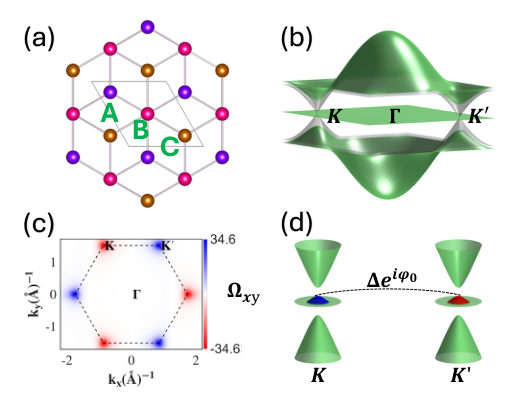
<figcaption class="paper-figure-caption"><b>Fig 1.</b> FIG. 1. Schematics of (a) the dice lattice and (b) the asso- ciated band structures for m = 0 (gray) and m ̸= 0 (green) within the first BZ. (c) Momentum-space distribution of the flat band’s Berry curvature Ωxy at m = 0.5t. (d) SVLC order originates via the coupling the particle (blue) and hole (red) on the flat band of the massive pseudospin-1 Dirac cones.</figcaption>
</figure>
<figure class="paper-figure-card">
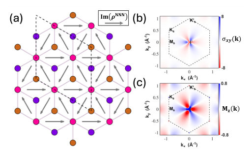
<figcaption class="paper-figure-caption"><b>Fig 2.</b> FIG. 2. (a) √</figcaption>
</figure>
<figure class="paper-figure-card">
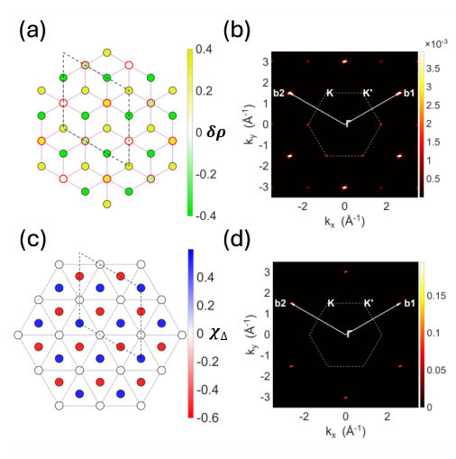
<figcaption class="paper-figure-caption"><b>Fig 3.</b> FIG. 3. (a) Sublattice-resolved charge density fluctuation δρ(r) = ρ(r) −¯ρ for the charge order, with red circles denot- ing B sublattices, and (b) the corresponding structure factor Sρ(q). (c) Emergent hexagonal lattice of the VCC χ△, with empty sites denoting B sublattices, and (d) the corresponding structure factor Sχ△(q). White dashed lines mark the BZ. b1 and b2 are the reciprocal lattice vectors.</figcaption>
</figure>
<figure class="paper-figure-card">
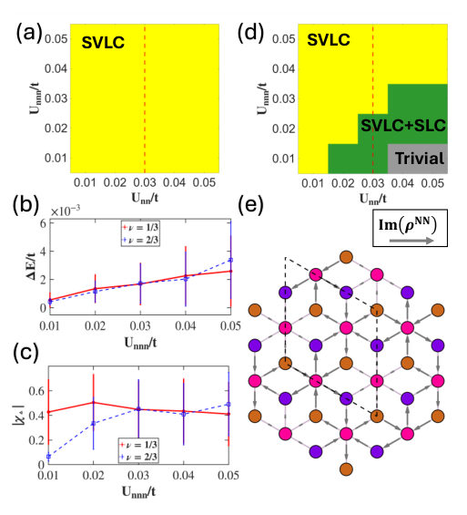
<figcaption class="paper-figure-caption"><b>Fig 4.</b> FIG. 4. (a) Phase diagram at ν = 1/3. The average and standard deviation of (b) ∆E = ⟨Esite −min(Esite)⟩and (c) |χ△|, over random seeds along UNN = 0.03t (red dashed lines in (a,b)). (d) Phase diagram at ν = 2/3. (e) √</figcaption>
</figure>
</div>

<p><strong>Summary.</strong> This paper theoretically predicts that short-range interactions induce a Staggered Virtual-Loop-Current (SVLC) order in pseudospin-1 Dirac flat bands on the dice lattice. This emergent state spontaneously breaks time-reversal symmetry, leading to measurable intrinsic anomalous Hall effects. The methodology uses advanced mean-field calculations to establish this novel ordered phase as the ground state.</p>
<p><strong>Why it may be interesting.</strong> The work provides a detailed theoretical framework for emergent topological orders in higher-pseudospin systems, extending flat-band physics beyond established valley-based models, which is relevant for understanding correlated phases in engineered quantum materials.</p>
<details>
<summary>Detailed structure</summary>
<p><strong>Main problem.</strong> Investigating exotic emergent orders, specifically Staggered Virtual-Loop-Current (SVLC) order, in higher-pseudospin Dirac flat bands.</p>
<p><strong>Main result.</strong> Short-range interactions drive the SVLC and $\sqrt{3} 	imes \sqrt{3}$ charge order, spontaneously breaking time-reversal symmetry and inducing finite intrinsic anomalous Hall conductivity. This mechanism distinguishes itself from pseudospin-1/2 systems by not requiring well-defined low-energy valleys.</p>
<p><strong>Method.</strong> The study employs Hartree-Fock (HF) approximations and Restricted Hartree-Fock (RSHF) calculations to determine the lowest energy ordered state in the weakly interacting regime.</p>
<p><strong>Model / system.</strong> The system is a partially filled pseudospin-1 Dirac flat band realized on the dice lattice. The analysis uses tight-binding models incorporating onsite potentials and short-range density-density interactions.</p>
<p><strong>Key observables.</strong> Staggered Virtual-Loop-Current (SVLC) order parameter, $\sqrt{3} 	imes \sqrt{3}$ charge order structure factor ($S_{
ho}(\mathbf{q})$), intrinsic Anomalous Hall Conductivity ($\sigma_{xy}$), and Orbital Magnetization ($M_z$).</p>
<p><strong>Important parameters / regimes.</strong> Filling fractions ($
u = 1/3, 2/3$), interaction strengths ($U_{NN}, U_{NNN}$), and the mass term ($m$) used to isolate the flat band.</p>
<p><strong>Assumptions / limitations.</strong> The analysis is performed in the weakly interacting regime, utilizing approximations like restricting calculations by $C_{3z}$ symmetry due to glassy states in the fully flat band limit.</p>
<p><strong>Figures summary.</strong> Figures illustrate the dice lattice structure and band gaps; they show the $\sqrt{3} 	imes \sqrt{3}$ supercell with SVLC order; and momentum-space distributions of intrinsic AHC and OM are presented.</p>
<p><strong>Paper structure.</strong> The paper progresses by establishing the physical platform (dice lattice, pseudospin-1 flat bands), developing theoretical tools (HF/RSHF calculations for interactions), deriving key diagnostics (order parameters, transport coefficients), and finally demonstrating that SVLC order is the lowest energy state compared to trivial orders.</p>
</details>
<details>
<summary>Abstract</summary>
<p>Although interactions are known to generate exotic phases in pseudospin-1/2 flat-band Dirac materials, it remains an open question whether the higher-pseudospin systems could realize entirely new types of orders and, if so, how such orders are governed by the nature of the underlying Dirac states. Here, we demonstrate that short-range interactions can drive a staggered virtual-loop-current (SVLC) order together with a $\sqrt{3}\times\sqrt{3}$ charge order in a partially filled pseudospin-1 Dirac flat band of the dice lattice. The virtual loop currents are shown to originate from interaction-driven quantum fluctuations of charge densities and exhibit alternating circulation between the neighboring triangular plaquettes. The resulting spontaneous time-reversal symmetry breaking is found to induce finite intrinsic anomalous Hall conductivity and orbital magnetization. The SVLC state is shown to be the lowest energy solution in restricted real-space Hartree-Fock calculations in the weakly interacting regime. The pseudospin-1 Dirac cones enter the SVLC order through the equivalence of their flat-band wavefunctions, and unlike the pseudospin-1/2 Dirac systems, do not rely on the presence of well-defined low-energy valleys in the electronic spectrum. Our study establishes higher-pseudospin Dirac systems as a new platform for investigating exotic emergent orders in flat-band physics.</p>
</details>
<p><sub><a href="#top">↑ back to top</a></sub></p>

<p><a id="paper-2606.15489"></a></p>
<h3 id="orbital-optimized-spin-adapted-multistate-contracted-vqe-for-excited-states-and-properties-on-quantum-hardware"><a href="http://arxiv.org/abs/2606.15489v1">Orbital-optimized spin-adapted multistate contracted VQE for excited states and properties on quantum hardware</a></h3>
<p><strong>Authors:</strong> Erik Rosendahl Kjellgren, Karl Michael Ziems, Peter Reinholdt, Stephan P. A. Sauer, Sonia Coriani, Jacob Kongsted<br>
<strong>Type:</strong> both · <strong>Category:</strong> quantum information and computing · <strong>PDF:</strong> <a href="https://arxiv.org/pdf/2606.15489v1">https://arxiv.org/pdf/2606.15489v1</a><br>
<strong>Analysis basis:</strong> full PDF text, analyzed in chunks
<strong>Topic relevance:</strong> <code>QC/QI experiment</code> <strong>2/5</strong></p>
<div class="figure-strip-hint">↔ Scroll figures horizontally</div>
<div class="paper-figures-scroll">
<figure class="paper-figure-card">
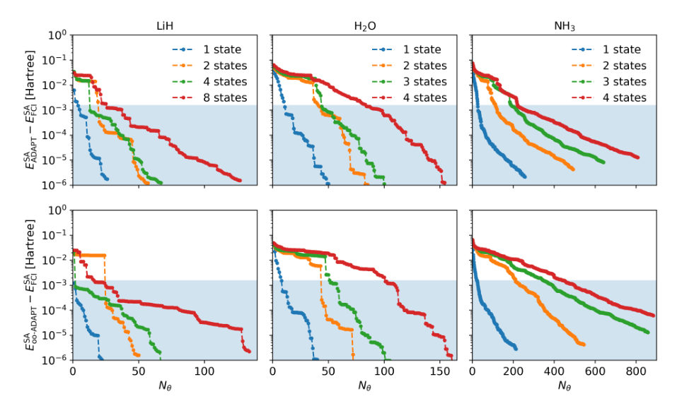
<figcaption class="paper-figure-caption"><b>Fig 1.</b> FIG. 1. State-averaged ADAPT (top row) and state-averaged oo-ADAPT (bottom row) calcula-</figcaption>
</figure>
<figure class="paper-figure-card">

<figcaption class="paper-figure-caption"><b>Fig 2.</b> Fig. 1 shows the error in the energy with respect to the state-averaged FCI energy for</figcaption>
</figure>
<figure class="paper-figure-card">
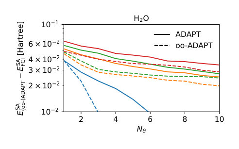
<figcaption class="paper-figure-caption"><b>Fig 3.</b> FIG. 2. Convergence of state-averaged ADAPT for the first 10 iterations for H2O. The colors</figcaption>
</figure>
<figure class="paper-figure-card">

<figcaption class="paper-figure-caption"><b>Fig 4.</b> FIG. 3. Electronic spectrum of formaldehyde (top row) using simulated noise based on</figcaption>
</figure>
<figure class="paper-figure-card">
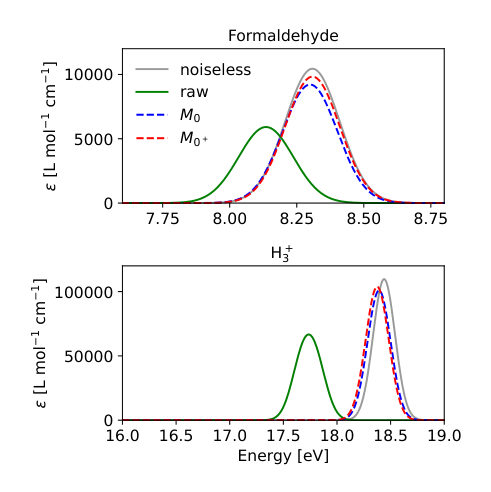
<figcaption class="paper-figure-caption"><b>Fig 5.</b> Fig. 3, the calculated spectra for formaldehyde (top plot) and H+ 3 (bottom plot) are shown.</figcaption>
</figure>
</div>

<p><strong>Summary.</strong> The paper presents an advanced variational quantum eigensolver (oo-MC-VQE) method designed to calculate electronic spectra for molecules by treating multiple excited states simultaneously. It rigorously incorporates spin symmetry and explicitly addresses the trade-off between accuracy and circuit complexity as more states are included. By testing on real quantum hardware, it demonstrates a practical pathway toward using near-term quantum devices for molecular spectroscopy.</p>
<p><strong>Why it may be interesting.</strong> This work directly addresses the intersection of quantum chemistry (molecular structure) and near-term quantum computing limitations, providing a concrete roadmap for applying VQE to complex many-body problems like excited state spectroscopy.</p>
<details>
<summary>Detailed structure</summary>
<p><strong>Main problem.</strong> The primary goal is to accurately compute ground and excited electronic states, along with spectroscopic properties, for molecular systems using quantum computation methods.</p>
<p><strong>Main result.</strong> The authors successfully implemented the oo-MC-VQE method on real quantum devices, demonstrating that while state-averaging increases circuit complexity linearly, error mitigation techniques are crucial for obtaining reliable spectra.</p>
<p><strong>Method.</strong> They employ the orbital-optimized spin-adapted multistate contracted VQE (oo-MC-VQE), which combines variational optimization over electronic states with explicit handling of spin symmetry and quantum error mitigation.</p>
<p><strong>Model / system.</strong> The work focuses on molecular systems like LiH, H2O, and formaldehyde. The underlying physics is described by the electronic Hamiltonian ($\hat{H}$), requiring state-specific or state-averaged descriptions for excited states.</p>
<p><strong>Key observables.</strong> Excitation energies ($\epsilon_{KL}$), transition moments, state-averaged energy ($E_{SA}$), and absorption spectra (energy vs. intensity).</p>
<p><strong>Important parameters / regimes.</strong> The number of electronic states included in the calculation; circuit depth/number of parameters required for the ansatz.</p>
<p><strong>Assumptions / limitations.</strong> The use of Unitary Product States ($ ext{|UPS}
angle$) as the ansatz, and reliance on error mitigation techniques (like $  ext{M}0+$) to correct for hardware noise.</p>
<p><strong>Figures summary.</strong> Figures illustrate state-averaged energy convergence, electronic spectra for formaldehyde and H3+ under simulated and real quantum device noise conditions, comparing different error mitigation strategies.</p>
<p><strong>Paper structure.</strong> The paper introduces the oo-MC-VQE formalism, details the gradient calculation incorporating orbital optimization ($\kappa$), discusses advanced error mitigation techniques ($    ext{M}0+$), and concludes with benchmarking results on molecular spectra using both simulation and real hardware data.</p>
</details>
<details>
<summary>Abstract</summary>
<p>We introduce the orbital-optimized multistate contracted variational quantum eigensolver (oo-MC-VQE) method with spin-adapted operators for the computation of ground and excited states, as well as state-specific and transition properties. The use of spin-adapted operators ensures that the spin symmetry of the reference states is conserved throughout the VQE optimization. In multistate variational approaches, achieving a balanced description of an increasing number of electronic states places growing demands on the expressibility of the underlying ansatz, thereby introducing a fundamental trade-off between accuracy and circuit complexity. We consider the effects of this trade-off explicitly and find that the number of circuit parameters required to obtain accurate results is reported to scale approximately linearly in the number of states. We further present an explicit quantum-circuit implementation of the oo-MC-VQE method and demonstrate its integration with quantum error mitigation techniques. Finally, we execute the method on real quantum devices to compute absorption spectra for two benchmark molecular systems.</p>
</details>
<p><sub><a href="#top">↑ back to top</a></sub></p>

<p><a id="paper-2606.15929"></a></p>
<h3 id="wavelet-localisation-and-local-modulation-freezing-in-mrw-unwrapping"><a href="http://arxiv.org/abs/2606.15929v1">Wavelet Localisation and Local Modulation Freezing in MRW Unwrapping</a></h3>
<p><strong>Authors:</strong> Mateusz Polakowski, Zbigniew R. Struzik<br>
<strong>Type:</strong> theory · <strong>Category:</strong> statistical mechanics · <strong>PDF:</strong> <a href="https://arxiv.org/pdf/2606.15929v1">https://arxiv.org/pdf/2606.15929v1</a><br>
<strong>Analysis basis:</strong> full PDF text, analyzed in chunks
<strong>Topic relevance:</strong> <code>Keldysh / 2PI / non-Gaussian methods</code> <strong>1/5</strong> · <code>analog quantum simulation</code> <strong>1/5</strong> · <code>correlated / nonlocal dissipation</code> <strong>1/5</strong> · <code>driven-dissipative phase transition</code> <strong>1/5</strong> · <code>entanglement &amp; information structure</code> <strong>1/5</strong> · <code>methods for driven-dissipative</code> <strong>1/5</strong> · <code>non-equilibrium dynamics</code> <strong>1/5</strong> · <code>non-equilibrium universality</code> <strong>1/5</strong></p>
<div class="figure-strip-hint">↔ Scroll figures horizontally</div>
<div class="paper-figures-scroll">
<figure class="paper-figure-card">
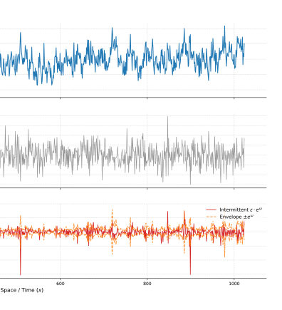
<figcaption class="paper-figure-caption"><b>Fig 1.</b> Fig. 1 From top to bottom: log-correlated carrier field ω(x), rapidly fluctuating modulation process ϵ(x) and observed intermittent field X(x) = ϵ(x)eω(x) with indicated envelope eω(x).</figcaption>
</figure>
<figure class="paper-figure-card">
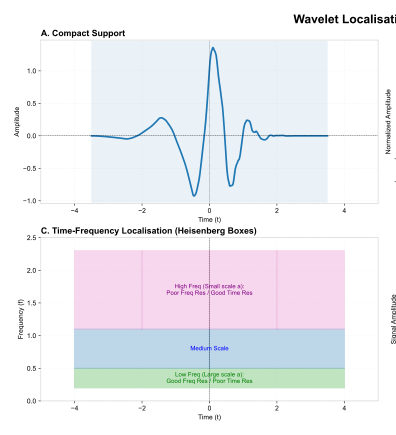
<figcaption class="paper-figure-caption"><b>Fig 2.</b> Fig. 2 Wavelet localisation geometry and time-frequency analysis principles. (A) The Daubechies 4 (db4) mother wavelet, ψ(t), shifted to center its compact support around t = 0. The shaded region highlights the finite temporal duration of the wavelet, a property that enables precise time-domain localisation. (B) Scale dependence of the wavelet family. Compressing the wavelet (a = 0.5) isolates high-frequency components, while dilating it (a = 2.0) captures low-frequency background trends. Amplitudes are scaled by a factor of 1/√a to conserve energy across all scales. (C) Time-frequency localisation limits represented via Heisenberg boxes. The varying aspect ratios illustrate the inherent...</figcaption>
</figure>
<figure class="paper-figure-card">
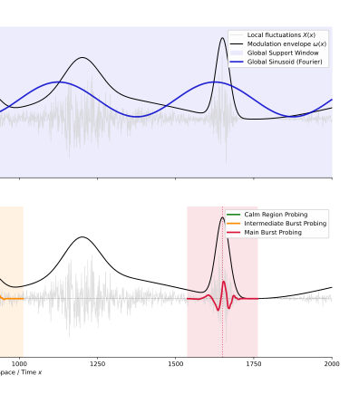
<figcaption class="paper-figure-caption"><b>Fig 3.</b> Fig. 3 Comparison of global Fourier and localised wavelet probing on an intermittent field X(x) with an underlying modulation envelope ω(x). (A) The Fourier transform utilises sinusoidal basis functions with infinite, global support across the entire domain. While this yields perfect spectral resolution, the domain-wide integration inherently mixes quiet background regions with intense, intermittent bursts, completely blurring temporal or spatial locality. (B) In contrast, wavelet analysis employs basis functions ψa,b(x) with strictly compact support. By translating the wavelet across varying spatial positions b, the integration is mathematically restricted to a confined local neighborhood...</figcaption>
</figure>
<figure class="paper-figure-card">

<figcaption class="paper-figure-caption"><b>Fig 4.</b> Fig. 4 Conceptual framework for extracting modulation statistics from an intermittent field. (A) An observed multiplicatively modulated signal, featuring fast local fluctuations X(x) embedded within a heterogeneous, slowly varying stochastic envelope eω(x). (B) Localised wavelet probing isolates finite spatial neighborhoods, utilising a compact wavelet ψa,b(x) at scale a and translation b. (C) The principle of local modulation freezing. Within the wavelet’s compact support, the modulation field is approximately constant, ω(x) ≈ω(b), allowing the logarithmic wavelet amplitudes to cleanly separate as log|WX(a, b)| ≈ω(b)+log |Wϵ(a, b)|. (D) Idealised localised covariance extraction....</figcaption>
</figure>
<figure class="paper-figure-card">

<figcaption class="paper-figure-caption"><b>Fig 5.</b> Fig. 5 A geometric illustration of why the validity of local modulation freezing is fundamentally dic- tated by the scale of observation. All panels display the identical underlying intermittent signal and its stochastic modulation envelope ω(x), varying only the wavelet support size to isolate geometric effects. (A) Fine-scale localised probing. The compact wavelet support operates within a nearly homo- geneous modulation neighborhood (δω(x, b) ≪1), perfectly preserving the idealised multiplicative separation WX(a, b) ≈eω(b)Wϵ(a, b). (B) Intermediate-scale partial mixing. As the support expands, it begins to span visibly different modulation states (δω(x, b) ̸= 0), integrating over...</figcaption>
</figure>
</div>

<p><strong>Summary.</strong> This work introduces a novel wavelet-based framework to analyze intermittent fluctuations modeled by multiplicative modulation. It shows that wavelets allow for 'local freezing,' enabling the separation of slow modulation effects from fast noise components at fine scales. Deviations observed at coarse scales are interpreted as quantifiable signatures of residual multiscale mixing, providing a powerful tool for characterizing local stochastic organization.</p>
<p><strong>Why it may be interesting.</strong> While focused on classical stochastic processes, the concept of using localized operators (wavelets) to extract hidden structure from complex fields mirrors techniques used in analyzing quantum correlation functions or entanglement measures in spatially structured quantum systems.</p>
<details>
<summary>Detailed structure</summary>
<p><strong>Main problem.</strong> The paper develops a localized wavelet formulation for Multifractal Random Walk (MRW) unwrapping to analyze intermittent stochastic fields.</p>
<p><strong>Main result.</strong> Wavelet localization acts as an operational mechanism enabling multiscale probing of local multiplicative structure, revealing scale-dependent freezing regimes and structured covariance distortions at coarse scales.</p>
<p><strong>Method.</strong> The analysis uses wavelet transforms with finite support to approximate the factorization of multiplicatively modulated fields, transforming global statistical problems into localized multiscale operator problems.</p>
<p><strong>Model / system.</strong> The model is an intermittent stochastic field $X(x) = e^{\omega(x)}\epsilon(x)$, where $\omega(x)$ is a slowly varying modulation field and $\epsilon(x)$ is a rapidly fluctuating carrier process, analyzed within the MRW framework.</p>
<p><strong>Key observables.</strong> Local wavelet statistics ($    ext{WX}(a, b)$), logarithmic covariance structure, and residual multiscale mixing terms ($C_{mix}$).</p>
<p><strong>Important parameters / regimes.</strong> Wavelet support geometry, scale-dependent overlap, intermittency parameter ($\lambda_2$), and the correlation length of the modulation field ($\xi$).</p>
<p><strong>Assumptions / limitations.</strong> The core assumption is 'local multiplicative modulation freezing,' which posits that within sufficiently localized wavelet supports, the modulation component becomes effectively constant or separable from the carrier fluctuations.</p>
<p><strong>Figures summary.</strong> Figures illustrate the comparison between global Fourier probing and localized wavelet probing; they also show systematic 'bump'-like distortions in covariance estimates at coarse scales, confirming residual multiscale mixing effects.</p>
<p><strong>Paper structure.</strong> The paper builds conceptually by first establishing the multiplicative modulation model, then introducing wavelets as a localization tool, deriving the local freezing approximation, and finally validating this framework through numerical simulations that map out scale-dependent successes and failures of the factorization.</p>
</details>
<details>
<summary>Abstract</summary>
<p>We develop a localised wavelet formulation of multifractal random walk unwrapping based on the local multiplicative modulation freezing. The framework is motivated by the observation that finite-support wavelet localisation may induce approximate local factorisation of multiplicatively modulated stochastic fields, allowing the modulation component to become effectively frozen within sufficiently localised probing domains. Within this regime, logarithmic wavelet amplitudes admit an approximate additive decomposition linking local wavelet statistics directly to the underlying modulation field. This viewpoint reformulates covariance-based MRW unwrapping as a localised multiscale operator problem in which wavelet coefficients act as finite-support probes of multiplicative organisation. The validity of the approximation depends explicitly on support geometry, scale-dependent overlap, and residual multiscale mixing generated by internal modulation variability. We show that these effects naturally produce finite-scale deviations from ideal logarithmic covariance scaling and lead to structured covariance distortions whose form depends on the interaction between the modulation field and the geometry of the wavelet representation. In the resulting framework, localisation itself becomes the operational mechanism enabling multiscale probing of local stochastic organisation. Numerical investigations using orthonormal wavelet decompositions support the proposed interpretation and demonstrate the emergence of scale-dependent freezing regimes, residual covariance mixing, and finite-support breakdown effects consistent with the theory. The proposed framework suggests a broader connection between wavelet localisation, local regularity organisation, and finite-support multiscale stochastic operators. Wavelet localisation becomes an operational mechanism for probing localised multiscale structure.</p>
</details>
<p><sub><a href="#top">↑ back to top</a></sub></p>

<p><a id="paper-2606.17018"></a></p>
<h3 id="distributed-acoustic-sensing-for-urban-monitoring-coverage-thresholds-and-percolation"><a href="http://arxiv.org/abs/2606.17018v1">Distributed Acoustic Sensing for Urban Monitoring: Coverage Thresholds and Percolation</a></h3>
<p><strong>Authors:</strong> Khen Cohen, Ariel Lellouch<br>
<strong>Type:</strong> theory · <strong>Category:</strong> statistical mechanics · <strong>PDF:</strong> <a href="https://arxiv.org/pdf/2606.17018v1">https://arxiv.org/pdf/2606.17018v1</a><br>
<strong>Analysis basis:</strong> full PDF text, analyzed in chunks
<strong>Topic relevance:</strong> <code>analog quantum simulation</code> <strong>1/5</strong> · <code>correlated / nonlocal dissipation</code> <strong>1/5</strong> · <code>driven-dissipative phase transition</code> <strong>1/5</strong> · <code>entanglement &amp; information structure</code> <strong>1/5</strong> · <code>exotic spin models in light-matter</code> <strong>1/5</strong> · <code>non-equilibrium dynamics</code> <strong>1/5</strong> · <code>non-equilibrium universality</code> <strong>1/5</strong></p>
<div class="figure-strip-hint">↔ Scroll figures horizontally</div>
<div class="paper-figures-scroll">
<figure class="paper-figure-card">

<figcaption class="paper-figure-caption"><b>Fig 1.</b> Fig. 1 Distributed Acoustic Sensor at city scale. a Schematic of the urban sensing principle. A standard telecommunication fiber (active or passive) is interrogated by a laser unit, converting the cable into a dense array of strain sensors. The system detects geophysical signals from seismic events and can monitor both traffic and seismic activity. b Optical fiber coverage in the Tel Aviv municipality (see Supplementary Materials for the full analysis) supports the conclusion that the fiber infrastructure covers most of the city streets. c The urban street map (top) is modeled as a planar graph G(V, E) (bottom), where road junctions form nodes V and street segments form edges E. Fiber-optic...</figcaption>
</figure>
<figure class="paper-figure-card">

<figcaption class="paper-figure-caption"><b>Fig 2.</b> Fig. 2 Critical distance as a function of the coverage ratio, according to eq. 3, with success probability of Psuccess = 90%. The city coverage phase transition point (red circle) at c⋆≈51.6%. This curve establishes the connection between the coverage ratio and the distance length, for a typical urban area. The units of d are in topological distance, and it is derived from the km-units distance as shown in the Methods.</figcaption>
</figure>
<figure class="paper-figure-card">

<figcaption class="paper-figure-caption"><b>Fig 3.</b> Fig. 3 Traffic-optimal DAS placement for San Francisco, Berlin, and Singapore. a Cov- erage ratio of c ≈13.5%, translated to a fiber length budget of 250 km, 816 km, and 611 km for the three cities, respectively. b Coverage ratio of c ≈2.7%, for a fiber length budget of 50 km, 163 km, and 122 km for the three cities, respectively. The streets color represents each street’s marginal contribution to the optimization reward.</figcaption>
</figure>
<figure class="paper-figure-card">

<figcaption class="paper-figure-caption"><b>Fig 4.</b> Fig. 4 Earthquake early warning in Mexico City. The optimization is for T = 4, 6, 8, 10 interrogators with 5 km minimum spacing, and M = 4. a Optimal DAS placement, with the colorbar indicating population density. b Detection delay ratio η (%) at each potential epicentre (depth h = 20 km), indicating detection time reduction.</figcaption>
</figure>
<figure class="paper-figure-card">

<figcaption class="paper-figure-caption"><b>Fig 5.</b> Fig. 5 Activity monitoring in Paris. Coverage disks (R = 600 m) are shown for T = 4 to T = 74 interrogators, achieving 10.6% to 91.5% population coverage respectively.</figcaption>
</figure>
</div>

<p><strong>Summary.</strong> This paper develops a theoretical framework using graph theory and percolation concepts to assess how well urban areas can be monitored using existing fiber-optic infrastructure via Distributed Acoustic Sensing (DAS). It determines critical coverage thresholds, notably $51.6\%$, that dictate the transition from localized monitoring capabilities to full city-scale network connectivity for applications like traffic tracking or early warning systems.</p>
<p><strong>Why it may be interesting.</strong> While applied to civil engineering/geophysics, the core mathematical framework—using percolation theory to define phase transitions in a complex network structure—is highly relevant to understanding connectivity thresholds in quantum networks or disordered physical systems.</p>
<details>
<summary>Detailed structure</summary>
<p><strong>Main problem.</strong> Analyzing the potential of Distributed Acoustic Sensing (DAS) for city-scale urban monitoring given constraints from real-world fiber infrastructure topology.</p>
<p><strong>Main result.</strong> The analysis identifies three distinct operational regimes based on coverage: low, transition ($\approx 51.6\%$ percolation), and high coverage, providing a roadmap for smart city deployment.</p>
<p><strong>Method.</strong> Graph Theory and Percolation Theory are used to model the urban street network connectivity as a planar graph subjected to varying levels of sensor coverage.</p>
<p><strong>Model / system.</strong> The physical system is an existing fiber-optic network repurposed into ultra-dense seismic arrays (DAS), modeled mathematically as a planar graph $G(V, E)$ representing city streets. The analysis uses bond percolation theory on this graph structure.</p>
<p><strong>Key observables.</strong> Coverage Ratio ($c$), Largest Connected Component Size ($S_{max}$), Percolation Threshold ($c^\star$).</p>
<p><strong>Important parameters / regimes.</strong> Critical coverage ratio $c_\star \approx 51.6\%$; sensing range (e.g., 500 m); minimum required sensor separation ($D$); population density ($
ho$).</p>
<p><strong>Assumptions / limitations.</strong> Availability of short-range, on-chip DAS technology; the city map can be accurately modeled as a planar graph; specific optimization goals (EEW, traffic) define placement strategies.</p>
<p><strong>Figures summary.</strong> Figures illustrate schematic sensing principles in Tel Aviv and show quantitative results regarding critical distance vs. coverage ratio, highlighting the percolation transition point at $c_\star \approx 51.6\%$.</p>
<p><strong>Paper structure.</strong> The paper establishes the DAS platform, models the urban map as a graph, applies percolation theory to define connectivity thresholds ($c^\star$), and then develops optimization frameworks for specific applications (EEW, traffic) based on these coverage regimes.</p>
</details>
<details>
<summary>Abstract</summary>
<p>Distributed Acoustic Sensing (DAS) enables the repurposing of existing fiber-optic networks as ultra-dense, long-range seismic arrays for urban monitoring. However, constraints imposed by real-world fiber infrastructure topology and components limit its use for city-scale applications. Recent technological developments have paved the way for short-range, on-chip DAS. Assuming their availability, and based on a Graph Theory framework, we show that monitoring applications fall along a coverage spectrum with two critical thresholds that define three distinct regimes. Low coverage (&lt;10%) can, with optimal design, resolve earthquake early warning, groundwater monitoring, geological mapping, and urban activity tracking. A percolation transition occurs at 51.6% coverage, beyond which the city effectively becomes fully covered and statistical traffic monitoring is possible. Only for effectively complete coverage, infrastructure monitoring, individual vehicle tracking, and pedestrian movement analysis become possible. Thus, privacy-related risks remain very low. We show and exemplify how, for metropolises around the world, an optimal sensing network can be designed for earthquake early warning, traffic monitoring, and urban activity tracking. This framework provides a near-future roadmap for deploying urban DAS networks as a backbone of smart city sensing.</p>
</details>
<p><sub><a href="#top">↑ back to top</a></sub></p>

<p><a id="paper-2606.16169"></a></p>
<h3 id="a-geometrically-exact-treatment-of-percolation-through-voids-around-faceted-regular-and-structurally-disordered-grains"><a href="http://arxiv.org/abs/2606.16169v1">A Geometrically Exact Treatment of Percolation Through Voids around Faceted Regular and Structurally Disordered Grains</a></h3>
<p><strong>Authors:</strong> D. J. Priour<br>
<strong>Type:</strong> theory · <strong>Category:</strong> disordered systems and neural networks · <strong>PDF:</strong> <a href="https://arxiv.org/pdf/2606.16169v1">https://arxiv.org/pdf/2606.16169v1</a><br>
<strong>Analysis basis:</strong> full PDF text, analyzed in chunks
<strong>Topic relevance:</strong> <code>driven-dissipative phase transition</code> <strong>1/5</strong> · <code>methods for driven-dissipative</code> <strong>1/5</strong> · <code>non-equilibrium dynamics</code> <strong>1/5</strong> · <code>non-equilibrium universality</code> <strong>1/5</strong></p>
<div class="figure-strip-hint">↔ Scroll figures horizontally</div>
<div class="paper-figures-scroll">
<figure class="paper-figure-card">

<figcaption class="paper-figure-caption"><b>Fig 1.</b> FIG. 1: (Color online) Percolating free surfaces in the case of randomly oriented cube-shaped grains shown near ηGC c in panel (a) and near ηV c in panel (b).</figcaption>
</figure>
<figure class="paper-figure-card">

<figcaption class="paper-figure-caption"><b>Fig 2.</b> FIG. 2: (Color online) ⟨f⟩for ηGC c and ρV c are shown in panel (a) and (b), respectively for the case of randomly oriented cubes; panels (c) and (d) show the corresponding data col- lapses.</figcaption>
</figure>
<figure class="paper-figure-card">

<figcaption class="paper-figure-caption"><b>Fig 3.</b> FIG. 3: (Color online) Panel (a), (b), and (c) depict sample assemblies of grains for various numbers of sustained slices Nsust. The graph in panel (d) is a frequency plot for facet number for a range of Nsust values. Panels (e) and (f) show a portion of a percolating free surface near ηGC c and ηV c , re- spectfully, for the Nsust values indicated.</figcaption>
</figure>
<figure class="paper-figure-card">

<figcaption class="paper-figure-caption"><b>Fig 4.</b> FIG. 4: (color online) Critical concentrations are shown in panels (a) and (b) for φV c = e−ηV c in the case of grain cluster and void percolation, respectively. The vertical axis for the former is the critical excluded volume φc = 1−e−ηGC c and the critical porosity e−ηV c for the latter. Monte Carlo statistical errors are smaller than the symbol sizes.</figcaption>
</figure>
</div>

<p><strong>Summary.</strong> This paper presents a geometrically exact method for calculating percolation thresholds in porous materials containing faceted or randomly fractured grains. It distinguishes between grain cluster percolation and void percolation, achieving high accuracy even when structural disorder is introduced. The work demonstrates that the critical porosity for void networks stabilizes at 5% under conditions of aggressive fragmentation.</p>
<p><strong>Why it may be interesting.</strong> While focused on geometry and percolation, the rigorous application of advanced numerical techniques to characterize phase transitions in disordered media connects conceptually to critical phenomena studied in complex correlated systems.</p>
<details>
<summary>Detailed structure</summary>
<p><strong>Main problem.</strong> The primary goal is calculating critical concentrations for percolation transitions, distinguishing between grain cluster percolation ($\eta_{GC}^c$) and void percolation ($\eta_V^c$), in porous materials.</p>
<p><strong>Main result.</strong> A geometrically exact method was developed that significantly improves the accuracy of $\eta_V^c$ calculations, showing that for highly fractured inclusions, the critical porosity saturates at 5%.</p>
<p><strong>Method.</strong> The authors developed a geometrically exact method to identify contiguous void volumes, scaling linearly with system volume, and employed data collapse techniques using tunable parameters ($\chi$) to determine critical thresholds.</p>
<p><strong>Model / system.</strong> The study models porous materials composed of randomly placed, impermeable grains shaped as Platonic solids, truncated icosahedra, or structurally disordered cubes subjected to random fracture planes. The analysis compares percolation behavior for aligned versus randomly oriented grains.</p>
<p><strong>Key observables.</strong> Critical concentrations ($\eta_{GC}^c$, $\eta_V^c$), critical porosity ($e^{-\eta_{V,c}}$), and the critical exponent ($
u$).</p>
<p><strong>Important parameters / regimes.</strong> Grain concentration ($\eta = 
ho v_B$), system size ($L$), and the degree of structural disorder (number of fracture planes).</p>
<p><strong>Assumptions / limitations.</strong> The method assumes that percolation conditions can be accurately modeled using a tunable parameter $\chi$, and for structural disorder, it analyzes the limit of many accumulated fractures.</p>
<p><strong>Figures summary.</strong> Figures illustrate percolating free surfaces near both grain cluster ($\eta_{GC}^c$) and void percolation ($\eta_V^c$) thresholds for randomly oriented cubes, and show data collapses used to determine these critical points.</p>
<p><strong>Paper structure.</strong> The paper develops a geometrically exact method for void identification, applies it to calculate $\eta_{GC}^c$ and $\eta_V^c$ for various regular solids (including structural disorder), compares results between aligned and random orientations, and analyzes the saturation of thresholds in highly fractured systems.</p>
</details>
<details>
<summary>Abstract</summary>
<p>Fluid and charge flow through interstitial volumes among impermeable randomly placed grains in porous materials ceases to occur at a critical concentration where networks of void volumes are disrupted at macroscopic scales. This critical density for void percolation can be difficult to calculate due to the irregular shape of the void regions. We develop and implement a geometrically exact method, scaling only linearly in the system volume, for identifying the shape and size of contiguous voids. In this manner, we calculate percolation thresholds for both grain cluster percolation (where system spanning networks of overlapping grains begin to appear with increasing density) and void percolation at much higher grain concentrations where networks of interstitial volumes no longer exist on macroscopic scales. For both the former and the latter, we calculate critical concentrations for inclusions in the shape of the Platonic solids (as well as truncated icosahedra) for both aligned and randomly oriented grains. In the case of critical densities for void percolation, the accuracy of our results is significantly improved relative to prior benchmarks. We also incorporate structural disorder of inclusions by considering impermeable grains in the form of cubes subject to a series of randomly placed and oriented fracture planes to mimic aggressively fractured inclusions found in nature. As the number of sustained slices becomes large, we find that the critical porosity for void percolation tends to 5%</p>
</details>
<p><sub><a href="#top">↑ back to top</a></sub></p>

<p><a id="paper-2606.15505"></a></p>
<h3 id="positive-real-identification-of-sparse-mori-hamiltonians-from-partial-observations"><a href="http://arxiv.org/abs/2606.15505v1">Positive-Real Identification of Sparse Mori-Hamiltonians from Partial Observations</a></h3>
<p><strong>Authors:</strong> Mohammad A. Ayoubi<br>
<strong>Type:</strong> theory · <strong>Category:</strong> statistical mechanics · <strong>PDF:</strong> <a href="https://arxiv.org/pdf/2606.15505v1">https://arxiv.org/pdf/2606.15505v1</a><br>
<strong>Analysis basis:</strong> full PDF text, analyzed in chunks
<strong>Topic relevance:</strong> <code>Keldysh / 2PI / non-Gaussian methods</code> <strong>1/5</strong> · <code>correlated / nonlocal dissipation</code> <strong>1/5</strong> · <code>driven-dissipative phase transition</code> <strong>1/5</strong> · <code>methods for driven-dissipative</code> <strong>1/5</strong></p>
<div class="figure-strip-hint">↔ Scroll figures horizontally</div>
<div class="paper-figures-scroll">
<figure class="paper-figure-card">

<figcaption class="paper-figure-caption"><b>Fig 1.</b> FIG. 1. PRISM benchmark validation (spring-mass chain, ntot = 4, fixed–free, x = [q1, q4]⊤). (a,b) Out- of-sample forecast of the two observed channels: a model fit on the first 40% of the record (shaded) predicts the held-out remainder (orange dashed) against ground truth (solid), for q1 (a) and q4 (b)—an equation of motion integrated forward, not a spectral fit. (c) Matrix residue recovery: recovered diag- onal (R11) and off-diagonal (R12) entries (filled) vs. analytical viv⊤ i (open), at the four identified frequencies. (d) Recov- ered (blue) vs. true (grey) coupling-matrix entries, grouped by mode; within each ωi group the three bars are the inde- pendent entries R11, R12, R22 of the...</figcaption>
</figure>
<figure class="paper-figure-card">

<figcaption class="paper-figure-caption"><b>Fig 2.</b> FIG. 2. FPUT α-chain. The single-mode initial condition spreads energy to other modes as amplitude grows: active spectral peaks recovered from q1(t) rise from one (A ≤0.2) to three (A ≥0.7), a data-driven signature of nonlinear energy sharing; the small-amplitude forecast (panel d) tracks the ob- servable. 10% additive Gaussian noise.</figcaption>
</figure>
<figure class="paper-figure-card">

<figcaption class="paper-figure-caption"><b>Fig 3.</b> FIG. 3. Hénon-Heiles. Out-of-sample forecast of x(t): the regular regime (E = 0.05, panel c) is tracked by the re- covered single-frequency model, whereas the chaotic regime (E = 0.15, panel d) diverges after a short horizon—the forecast-breakdown horizon is itself a diagnostic of chaos. 10% additive Gaussian noise.</figcaption>
</figure>
</div>

<p><strong>Summary.</strong> The paper introduces PRISM, a novel technique to discover the governing Hamiltonian of partially observed conservative physical systems. By exploiting the positive-real structure inherent in the system's autocorrelation function, it bypasses ill-posed state reconstruction methods common in data science. This allows for the direct recovery of energy-conserving equations from limited measurement data.</p>
<p><strong>Why it may be interesting.</strong> This work provides a powerful data-driven tool for extracting fundamental physical laws (Hamiltonians) from incomplete measurements, which is highly relevant in areas like plasma physics or complex mechanical systems where full state measurement is impossible.</p>
<details>
<summary>Detailed structure</summary>
<p><strong>Main problem.</strong> The central goal is discovering the governing equations (minimal Hamiltonian) of a physical system solely from partial, noisy observations of its state variables.</p>
<p><strong>Main result.</strong> The method successfully recovers interpretable, energy-conserving equations of motion for partially observed conservative systems without needing to reconstruct the hidden state or using neural networks.</p>
<p><strong>Method.</strong> It projects the full dynamics onto the observable subspace, deriving a memory kernel that is proven to be positive-real and lossless. This allows direct identification from the autocorrelation function via spectral analysis or optimization (NNLS/SDP).</p>
<p><strong>Model / system.</strong> The system under study is assumed to be conservative (Hamiltonian), with dynamics partitioned into observable ($x$) and hidden coordinates ($\{q_i, p_i\}$). The full Hamiltonian structure dictates the form of the governing equation.</p>
<p><strong>Key observables.</strong> Observable autocorrelation function $C(	au) = \langle x(t)x(t+	au)^	op 
angle$, spectral density $S(\omega)$, and the recovered memory kernel $\hat{K}(s)$.</p>
<p><strong>Important parameters / regimes.</strong> Hidden natural frequencies ($\{\omega_i\}$), coupling residues ($R_i$), and the system's total energy (for equipartition assumptions).</p>
<p><strong>Assumptions / limitations.</strong> The system must be conservative (Hamiltonian); the fluctuation force is assumed uncorrelated with initial conditions; and for residue magnitude recovery, equipartition of energy among hidden modes is required.</p>
<p><strong>Figures summary.</strong> Figures illustrate successful tracking of regular dynamics in the Hénon-Heiles benchmark while showing divergence when the system enters a chaotic regime, serving as a chaos diagnostic.</p>
<p><strong>Paper structure.</strong> The paper develops the theory by deriving the Mori-Zwanzig equation for the observable subspace. It then uses the positive-real structure theorem to relate the memory kernel to the autocorrelation function, leading to identification algorithms (NNLS/SDP) and validation on various Hamiltonian benchmarks.</p>
</details>
<details>
<summary>Abstract</summary>
<p>Discovering the governing equations of a physical system from data is a central goal across the sciences, yet in most experiments only a few states are accessible while the rest stay hidden. Existing approaches treat this partial observability as an obstacle to be removed by first reconstructing the hidden state -- a step that is ill-posed under noise and that discards the physical constraints, such as energy conservation, that the true dynamics obey. We show that for conservative (Hamiltonian) systems no reconstruction is needed: projecting the dynamics onto the measured coordinates yields a memory kernel that we prove to be a lossless positive-real rational matrix, whose poles are the hidden natural frequencies and whose positive-semidefinite residues encode the couplings. The governing equation -- and the underlying Hamiltonian -- can therefore be read directly from the autocorrelation of the measured signal, with guarantees of uniqueness and physical passivity, and without neural networks. We validate the approach on linear, nonlinear, and chaotic systems under realistic noise. By recovering interpretable equations of motion that conserve energy by construction from partial measurements, the method offers a common tool for problems spanning mechanics, fluid and plasma physics, and beyond.</p>
</details>
<p><sub><a href="#top">↑ back to top</a></sub></p>

<p><a id="paper-2606.15774"></a></p>
<h3 id="stabilizing-itinerant-electrons-in-a-corner-sharing-kagome-oxide-nd4os3zno14"><a href="http://arxiv.org/abs/2606.15774v1">Stabilizing Itinerant Electrons in a Corner-Sharing Kagomé Oxide Nd4Os3ZnO14</a></h3>
<p><strong>Authors:</strong> Ryutaro Okuma, Yuita Fujisawa, Chia-Hsiu Hsu, Keita Kojima, Daisuke Nishio-Hamane, Kazuki Sumida, Akio Kimura, Akira Yasui, Kohei Yamagami, Jun-ichi Yamaura, Yoshihiko Okamoto<br>
<strong>Type:</strong> both · <strong>Category:</strong> strongly correlated electrons · <strong>PDF:</strong> <a href="https://arxiv.org/pdf/2606.15774v1">https://arxiv.org/pdf/2606.15774v1</a><br>
<strong>Analysis basis:</strong> full PDF text, analyzed in chunks
<strong>Topic relevance:</strong> <code>Kondo &amp; dissipative impurity</code> <strong>1/5</strong> · <code>analog quantum simulation</code> <strong>1/5</strong> · <code>exotic spin models in light-matter</code> <strong>1/5</strong> · <code>non-equilibrium dynamics</code> <strong>1/5</strong></p>
<div class="figure-strip-hint">↔ Scroll figures horizontally</div>
<div class="paper-figures-scroll">
<figure class="paper-figure-card">

<figcaption class="paper-figure-caption"><b>Fig 1.</b> Figure 1. Structural diversity of d-electron-based kagomé materials. Red and light-blue spheres represent transition-metal ions and ligands, respectively. Copper hydroxides4 consist of edge-sharing octahedral networks. Corner-sharing octahedral networks have so far been realized only in strongly ionic compounds, such as jarosite,18 vanadium oxyfluorides22 and copper/titanium fluorides.23-26 In cluster compounds,27-30 the edge-sharing octahedra are strongly distorted, resulting in molecular triangular units rather than an extended kagomé network. Metallic kagomé compounds, by contrast, typically feature face-sharing octahedra19, 20, 31 or close-packed arrangements of metal atoms.32 The...</figcaption>
</figure>
<figure class="paper-figure-card">

<figcaption class="paper-figure-caption"><b>Fig 2.</b> Figure 3. Crystal structures of Nd4Os3ZnO14. Red/pink, sky-blue, grey, and yellow/orange spheres represent Os, O, Zn, and Nd atoms, respectively. Thermal ellipsoids are drawn at the 95% probability level. (a) Layered crystal structure viewed along the b axis. The black outline denotes the crystallographic unit cell. The direction of Zn distortion is shown in red ⊙ and ⊗. (b) Corner- sharing OsO6 octahedral network viewed along the c⁎ axis. Thick colored bonds indicate distinct Os–Os distances. The Zn1 site is displaced toward Os1, forming a 2+2 coordination with oxygen, while dashed bonds illustrate the remaining longer 2+6 coordination. (c) Local coordination environments of Os1, Os2, and...</figcaption>
</figure>
<figure class="paper-figure-card">

<figcaption class="paper-figure-caption"><b>Fig 3.</b> Figure 4. Physical properties of a twinned single crystal of Nd4Os3ZnO14. (a) Magnetic susceptibility measured under an in-plane magnetic field of 7 T. The black solid line shows a Curie–Weiss fit performed in the temperature range 80–350 K. The inset shows magnetization process at 2 K (red open circles) and 10 K (blue line). (b) Temperature dependence of the in-plane electrical resistivity. The inset displays the temperature derivative of the resistivity, highlighting anomalies associated with the magnetic transition. (c) Temperature dependence of the Hall coefficient obtained from a linear fit to the Hall resistivity between 0 and 5 T. The inset shows a magnified view in the metallic...</figcaption>
</figure>
<figure class="paper-figure-card">

<figcaption class="paper-figure-caption"><b>Fig 4.</b> Figure 5. Electronic structure of Nd4Os3ZnO14. (a) HAXPES spectra compared with the density of states (DOS) obtained from DFT calculations. (b) Symmetrized HAXPES spectra showing the suppression of spectral weight near the Fermi level across T⁎. (c) Schematic illustration of the low energy electronic structure near the Fermi level. The electron and hole bands are shown by red and skyblue lines, respectively (left). The corresponding Brillouin zone is shown on the right. Although the crystal structure is monoclinic, the deviation from hexagonal symmetry is very small and kz dispersion is weak. For clarity, the Brillouin zone and high-symmetry directions are presented using a hexagonal...</figcaption>
</figure>
<figure class="paper-figure-card">

<figcaption class="paper-figure-caption"><b>Fig 5.</b> Figure 6. Cation stacking geometry in corner-sharing kagomé oxides. Dotted lines indicate the kagomé lattice formed by Os/Sb ions. (a) Monoclinic stacking geometry of the kagomé layers in Nd4Os3ZnO14. (b) Rhombohedral stacking geometry of the cation framework in Nd3Sb3Zn2O14. (c) Recovery of a pseudo-rhombohedral stacking registry through successive 2c, 4c, and 6c translations in Nd4Os3ZnO14. Kagomé layers related by the pseudo-rhombohedral centering translations are highlighted using the same color. The corresponding pseudo-rhombohedral supercell is outlined in yellow.</figcaption>
</figure>
</div>

<p><strong>Summary.</strong> The authors report synthesizing $  ext{Nd}<em 14>4   ext{Os}_3   ext{ZnO}</em>$, a corner-sharing kagomé oxide that exhibits itinerant electron behavior. Through combined structural, transport, and electronic measurements, they demonstrate a transition from a semimetallic to a semiconducting state upon cooling. This material is proposed as an excellent model system for studying correlated electron phenomena in the itinerant regime.</p>
<p><strong>Why it may be interesting.</strong> This work directly addresses the challenge of stabilizing correlated electron states in geometrically frustrated lattices using 5d transition metals, which is a key area for understanding exotic quantum materials relevant to condensed matter theory.</p>
<details>
<summary>Detailed structure</summary>
<p><strong>Main problem.</strong> The study investigates achieving and characterizing a stable electronic state in kagomé oxides that combines itinerant electron behavior with strong correlation effects, overcoming historical limitations of charge localization.</p>
<p><strong>Main result.</strong> The material $ ext{Nd}<em 14>4   ext{Os}_3   ext{ZnO}</em>$ exhibits a complex interplay between its structure (corner-sharing OsO6 octahedra), electronic properties (semimetallic to semiconducting transition), and magnetism, establishing it as a promising platform for itinerant correlated electron physics.</p>
<p><strong>Method.</strong> The research combines high-temperature synthesis with structural characterization (XRD), electrical transport measurements ($
ho(T)$, Hall effect), magnetic susceptibility measurements, and advanced theoretical calculations (DFT).</p>
<p><strong>Model / system.</strong> The physical system is the 5d transition-metal kagomé oxide $   ext{Nd}<em 14>4   ext{Os}_3   ext{ZnO}</em>$. Structurally, it features a quasi-2D network of corner-sharing OsO6 octahedra stabilized in a monoclinic symmetry by Zn off-centering.</p>
<p><strong>Key observables.</strong> In-plane resistivity ($
ho(T)$), Hall resistivity ($R_H$), magnetic susceptibility ($\chi(T)$), and electronic band structure near the Fermi level.</p>
<p><strong>Important parameters / regimes.</strong> The transition temperature $T^* \approx 150	ext{ K}$ marks a metal-insulator-like anomaly; the nominal osmium valence is $+4.67$.</p>
<p><strong>Assumptions / limitations.</strong> The structural analysis assumes that Zn off-centering stabilizes the monoclinic symmetry, and electronic transport analyses rely on two-carrier fitting models.</p>
<p><strong>Figures summary.</strong> Figures illustrate the crystal structure (XRD), optical views of single crystals, band dispersions in both monoclinic and pseudo-hexagonal Brillouin zones, and temperature dependence of electrical properties.</p>
<p><strong>Paper structure.</strong> The paper proceeds by synthesizing the material, determining its complex monoclinic crystal structure via XRD refinement (including twin domain analysis), characterizing its magnetic and transport anomalies ($T^*$), and finally modeling the electronic band structure to explain itinerant behavior.</p>
</details>
<details>
<summary>Abstract</summary>
<p>Kagome oxides provide a fertile platform for exploring exotic electronic states arising from geometrical frustration and characteristic band topology. Here, we report the synthesis of a 5d transition-metal kagome oxide, Nd4Os3ZnO14, obtained via high-temperature, high-pressure hydrothermal synthesis. Single-crystal X-ray diffraction reveals a two-dimensional kagome network formed by corner-sharing OsO6 octahedra, with a nominal osmium valence of +4.67. In-plane resistivity and hard X-ray photoelectron spectroscopy measurements indicate that the semimetallic electronic structure at room temperature evolves into a semiconducting ground state upon cooling, accompanied by a pronounced enhancement of hole mobility. Magnetic susceptibility measurements demonstrate localized Nd3+ moments without long-range magnetic order down to 2 K. The coexistence of a metallic kagome plane, strong spin-orbit coupling inherent to 5d electrons, and rare-earth magnetism establishes Nd4Os3ZnO14 as a promising platform for investigating correlated electron phenomena in kagome oxides within the itinerant regime.</p>
</details>
<p><sub><a href="#top">↑ back to top</a></sub></p>

<p><a id="paper-2606.15464"></a></p>
<h3 id="certified-finite-shot-operating-windows-for-virtual-distillation-and-symmetry-verification"><a href="http://arxiv.org/abs/2606.15464v1">Certified Finite-Shot Operating Windows for Virtual Distillation and Symmetry Verification</a></h3>
<p><strong>Authors:</strong> Vicenzo Scavino Alfaro<br>
<strong>Type:</strong> both · <strong>Category:</strong> quantum information and computing · <strong>PDF:</strong> <a href="https://arxiv.org/pdf/2606.15464v1">https://arxiv.org/pdf/2606.15464v1</a><br>
<strong>Analysis basis:</strong> full PDF text, analyzed in chunks
<strong>Topic relevance:</strong> <code>QC/QI experiment</code> <strong>1/5</strong> · <code>methods for driven-dissipative</code> <strong>1/5</strong> · <code>quantum measurements</code> <strong>1/5</strong></p>
<div class="figure-strip-hint">↔ Scroll figures horizontally</div>
<div class="paper-figures-scroll">
<figure class="paper-figure-card">

<figcaption class="paper-figure-caption"><b>Fig 1.</b> Figure 1: Level 1 coverage audit for the P1 leading VD MSE coefficient. The horizontal intervals are WLS 95% intervals for bβfit 1 , the dots are the closed-form ev, and orange marks the two v2 instances outside the interval. The same coefficient covered 10/10 instances in v1 and 8/10 in v2; the v2 outcome has binomial lower-tail probability 0.086 under nominal 95% coverage.</figcaption>
</figure>
<figure class="paper-figure-card">

<figcaption class="paper-figure-caption"><b>Fig 2.</b> Figure 2: Level 1 quotient-law and c-coefficient diagnostics from the amended v2 run. Left: E1 MSE versus 1/B for the primary instance used in the figure, illustrating the VD quotient curvature. Right: E2 separates the nonzero VD quotient-bias slope from the SV slope centered near zero.</figcaption>
</figure>
<figure class="paper-figure-card">

<figcaption class="paper-figure-caption"><b>Fig 3.</b> Figure 3: Level 1 first-order bias-floor checks from the amended v2 run. The measured white-box slopes track the generator formulas for δVD and δSV on the primary plotted instance.</figcaption>
</figure>
<figure class="paper-figure-card">

<figcaption class="paper-figure-caption"><b>Fig 4.</b> Figure 4: Level 1 denominator-concentration diagnostic from the amended v2 run. The bad-denominator probability collapses around the predicted scale Bden, matching the P7 interpretation in Table 2.</figcaption>
</figure>
<figure class="paper-figure-card">

<figcaption class="paper-figure-caption"><b>Fig 5.</b> Figure 5: Level 1 crossing diagnostic from the amended v2 run. The shaded region is the fitted-remainder operational band around the leading crossing scale used for P9; this is a diagnostic fitted-C band, not the formal conservative certificate.</figcaption>
</figure>
</div>

<p><strong>Summary.</strong> This paper develops a rigorous theory to compare quantum error mitigation methods like Virtual Distillation and Symmetry Verification based on finite experimental resources rather than idealized infinite limits. It derives explicit Mean-Squared Error laws and predicts certified operating windows where one method demonstrably outperforms another. The findings guide the practical implementation of QEM by identifying regime structures rather than declaring a single universal winner.</p>
<p><strong>Why it may be interesting.</strong> This work provides rigorous, resource-aware metrics for comparing QEM techniques, which is crucial for designing practical quantum algorithms that must operate under realistic noise constraints.</p>
<details>
<summary>Detailed structure</summary>
<p><strong>Main problem.</strong> The paper addresses the limitations of comparing quantum error mitigation (QEM) methods by moving beyond infinite-shot bias analysis to develop certified operating windows based on finite sampling budgets.</p>
<p><strong>Main result.</strong> It establishes a 'selection trichotomy' that classifies method comparisons into tie, uniform dominance, or a genuine tradeoff with a certified crossing window, providing falsifiable predictions for resource scaling.</p>
<p><strong>Method.</strong> The authors developed a finite-shot operating-window theory by deriving non-asymptotic Mean-Squared Error (MSE) laws for Virtual Distillation (VD) and Symmetry Verification (SV).</p>
<p><strong>Model / system.</strong> The analysis applies to noisy quantum devices characterized by local expansions of the state $
ho_p$, comparing VD and SV estimators using controlled observables.</p>
<p><strong>Key observables.</strong> Mean-Squared Error ($  ext{MSE}$), bias terms ($b(p)$), variance coefficients, and certified crossing windows ($R^\star$).</p>
<p><strong>Important parameters / regimes.</strong> Noise rate parameter $p$, sample size $B$ (shots), copy number $M$, and resource budget $R$.</p>
<p><strong>Assumptions / limitations.</strong> The analysis relies on local expansions of the noisy state in $p$ and uses techniques like Efron–Stein certificates to bound total variance.</p>
<p><strong>Figures summary.</strong> Not specified, but the notes describe theoretical derivations leading to explicit bounds and comparisons between methods.</p>
<p><strong>Paper structure.</strong> The paper builds theory by deriving MSE laws for VD (as a quotient estimator) and SV, then uses a selection trichotomy to classify pairwise method comparisons. It validates this theory with white-box experiments and tests it on gate-level device simulations.</p>
</details>
<details>
<summary>Abstract</summary>
<p>Quantum error mitigation methods are usually compared through their infinite-shot bias, but on real devices the comparison is decided by finite sampling budgets, estimator instabilities, and per-shot resource costs. We develop a finite-shot operating-window theory that makes this comparison certifiable for virtual distillation (VD) and symmetry verification (SV): for each method we derive a mean-squared-error law with explicit, non-asymptotic remainder constants. For VD, the law captures the statistical bias and denominator instability of its quotient estimator, with a concentration certificate locating the sample size beyond which the quotient is trustworthy; for SV, it isolates the bias floor left by undetectable errors and the sampling penalty set by the acceptance probability. A selection trichotomy classifies any two-method comparison into a tie, uniform dominance, or a genuine tradeoff with a certified crossing window, including a self-consistency test that rejects spurious crossings. The theory makes falsifiable predictions -- operating-window locations scaling as $p^{-2}$ or $p^{-1}$ in the noise rate, and the sign pattern of all pairwise comparisons -- which exact white-box experiments confirm with fitted exponent $-1.97$ against the predicted $-2$ and with $300/300$ sign agreement, within a pre-registered analysis whose single failed gate, an over-strict all-instance criterion, is reported and audited in full. Gate-level simulation and archived runs on two IBM backends then test the windows under device conditions: idealized VD windows exist, but realistic interferometry overhead and denominator instability erase them, and calibrated SV is the practical winner in the tested QAOA instances. This absence of a universal winner is not a failure of mitigation; it is the regime structure that certified operating windows predict.</p>
</details>
<p><sub><a href="#top">↑ back to top</a></sub></p>

<p><a id="paper-2606.16037"></a></p>
<h3 id="adiabatically-induced-kawaguchi-geometry-and-jerk-in-quantum-classical-systems"><a href="http://arxiv.org/abs/2606.16037v1">Adiabatically-induced Kawaguchi geometry and jerk in quantum-classical systems</a></h3>
<p><strong>Authors:</strong> Athanasios Chatzistavrakidis, Larisa Jonke, Ryan Requist<br>
<strong>Type:</strong> theory · <strong>Category:</strong> other · <strong>PDF:</strong> <a href="https://arxiv.org/pdf/2606.16037v1">https://arxiv.org/pdf/2606.16037v1</a><br>
<strong>Analysis basis:</strong> full PDF text, analyzed in chunks
<strong>Topic relevance:</strong> <code>Keldysh / 2PI / non-Gaussian methods</code> <strong>1/5</strong> · <code>non-equilibrium dynamics</code> <strong>1/5</strong></p>
<div class="figure-strip-hint">↔ Scroll figures horizontally</div>
<div class="paper-figures-scroll">
<figure class="paper-figure-card">

<figcaption class="paper-figure-caption"><b>Fig 1.</b> Low-resolution page preview, page 2</figcaption>
</figure>
<figure class="paper-figure-card">

<figcaption class="paper-figure-caption"><b>Fig 2.</b> Low-resolution page preview, page 3</figcaption>
</figure>
<figure class="paper-figure-card">

<figcaption class="paper-figure-caption"><b>Fig 3.</b> Low-resolution page preview, page 4</figcaption>
</figure>
<figure class="paper-figure-card">

<figcaption class="paper-figure-caption"><b>Fig 4.</b> Low-resolution page preview, page 5</figcaption>
</figure>
<figure class="paper-figure-card">

<figcaption class="paper-figure-caption"><b>Fig 5.</b> Low-resolution page preview, page 6</figcaption>
</figure>
</div>

<p><strong>Summary.</strong> The paper develops an advanced theoretical method to model quantum-classical systems by adiabatically eliminating fast electronic degrees of freedom. It derives increasingly accurate effective equations of motion, culminating in a description governed by Kawaguchi geometry due to third-order nonadiabatic forces involving the jerk. This provides a powerful geometric tool for simulating complex molecular dynamics beyond standard approximations.</p>
<p><strong>Why it may be interesting.</strong> This work provides a rigorous geometric framework for nonadiabatic dynamics that goes significantly beyond standard Born-Oppenheimer or even generalized geodesic approaches by incorporating higher-order time derivatives into the effective Lagrangian/Hamiltonian structure.</p>
<details>
<summary>Detailed structure</summary>
<p><strong>Main problem.</strong> To derive an effective equation of motion for slow classical variables by adiabatically eliminating fast quantum degrees of freedom, incorporating nonadiabatic effects up to the third order.</p>
<p><strong>Main result.</strong> The resulting dynamics are governed by a geometry characterized by Kawaguchi geometry (or KL2 manifolds), leading to equations involving the jerk ($\ddot{x}$'s derivative) rather than just acceleration.</p>
<p><strong>Method.</strong> Adiabatic perturbation theory is used iteratively, employing near-identity unitary transformations to systematically derive higher-order effective actions and Hamiltonians from the full quantum-classical action functional.</p>
<p><strong>Model / system.</strong> The system models mixed quantum-classical dynamics (e.g., molecular systems) where electronic states $|\psi
angle$ evolve quantum mechanically based on a Hamiltonian $H(x)$ dependent on classical nuclear coordinates $x_\mu$.</p>
<p><strong>Key observables.</strong> Effective forces, the jerk vector ($\mathbf{j}$), and geometric structures like the almost symplectic form ($\omega_{\mu
u}$) and the Kawaguchi geometry.</p>
<p><strong>Important parameters / regimes.</strong> The adiabatic parameter $\epsilon$, which controls the order of approximation (e.g., $\mathcal{O}(\epsilon^2)$ for second-order corrections).</p>
<p><strong>Assumptions / limitations.</strong> The analysis relies on treating the adiabatic parameter $\epsilon$ as small to systematically derive higher-order corrections, and it assumes the existence of suitable unitary transformations to simplify the effective Hamiltonian.</p>
<p><strong>Figures summary.</strong> Not specified in the notes; however, the text describes deriving equations involving geometric tensors ($\omega_{\mu
u}, \gamma_{\lambda\mu
u}$) and comparing action forms (e.g., Eq. 4.13 vs. KL2 action).</p>
<p><strong>Paper structure.</strong> The paper follows a systematic progression: first establishing the general problem of adiabatic elimination; then deriving corrections up to second order, revealing Riemannian geometry; subsequently extending this framework to third order, necessitating the introduction of Finsler and Kawaguchi geometries to handle jerk-dependent forces.</p>
</details>
<details>
<summary>Abstract</summary>
<p>Adiabatically eliminating the quantum degrees of freedom in a mixed quantum-classical system produces an effective force in the classical equation of motion. The elimination can be made to any order in the adiabatic parameter, generating a series of higher order forces. By applying a sequence of near-identity unitary transformations to the quantum state, we derive a hierarchy of increasingly accurate effective actions for the classical variables. The third order Euler-Lagrange equation is non-Newtonian as the force depends on the jerk, the third order time derivative of position. We find that the third order terms induce a special kind of Kawaguchi geometry on the space of classical variables. This geometry is characterized by an almost symplectic structure and a differential line element that depends on the acceleration in addition to the velocity. Our results can be used to efficiently capture higher order nonadiabatic effects in molecular dynamics simulations.</p>
</details>
<p><sub><a href="#top">↑ back to top</a></sub></p>
<hr>
<p>
<a href="index.html">← Index</a>
 · <a href="papers_06.html">← Previous</a> · <a href="papers_08.html">Next →</a>
</p>
<hr>

</body>
</html>
